Gauntlet progress
Platform core, judged piece by piece against the owner's bar and Odoo Community. Rebuilt from gauntlet/verdicts/ by gauntlet/tools/record.mjs. Full evidence in ledger.md; owner items in needs-human.md.
Foundation and hard gates
Wave 0 · 16 rounds judgedDone for now · WIN in round 12The full verify at 417f1990 failed on one test: G1CompanyIsolationTests.A_user_of_company_X_cannot_reach_company_Y_through_any_endpoint, which is p00's own gate. It reported company X's read-only user getting different answers from GET /api/audit/log?take=20002 (20002 is one of company Y's values) and from the same request with a value that exists nowhere. On the real product the value cannot matter. The audit log clamps take to 200 (src/Modules/Audit/Erp.Modules.Audit/AuditEndpoints.cs:110), so both requests ask for 200 of 307 rows. The two windows differ by one row at the boundary: the control ends at 06:59:24.659 with a next cursor, and the Y answer goes on to an older row at 06:59:24.638. The gate's second ask of the same pair also differed. So the user's audit log moved during the pair; this is not a company-Y oracle. Run on its own on a quiet machine, the test passed twice (2 min 26 s and 2 min 25 s). In the suite, at a load of 15 to 31 on 16 threads, it took 8 min 30 s and failed. A gate that flags a correct product depending on machine load still counts as a failing test, so the round is blocked. It also matters beyond this round. Every module a UAE trading or manufacturing company needs (sales, purchasing, stock, VAT) writes audit rows and queues jobs, so more lists will move while the gate reads them, and integrations will keep failing at random. The fix must keep the differential strict for real oracles, for example by comparing only rows written before the pair started, or by quiescing the job runner during read batches. A retry, a longer timeout or a skip is not a fix.
- G3 clean clone: ./erp verify (build, migrate, seed, every test) FAIL — In a fresh clone of 417f1990, verify failed after 9,238 s, timed from the slot being taken at 06:58:23Z. Only the dotnet stage failed: 921 passed and 1 failed (Erp.Gates.Tests.G1.G1CompanyIsolationTests.A_user_of_company_X_cannot_reach_company_Y_through_any_endpoint). Everything else passed: web 663/663, e2e 138/138 with the ours-drivers health check all verified, compare 488/488, build 13/13. Files: verify-critic-p00-foundation-r17.log, verify-failed/, failure-summary.txt.
- G3 clean clone: ./erp up (running seeded demo) PASS — ERP_PROJECT=c-p00-foundation-r17 ERP_HTTP_PORT=20050 ERP_DB_PORT=20051 ./erp up exited 0 after 260 s. It served the demo with 100,005 users and printed the URL and the sign-ins (erp-up.log). The port and project overrides were honoured.
- G1 tenant isolation: my own live attack as tenant A (alnoor) against tenant B (gulfsteel) PASS — Live attack on the real product (attack/attack.mjs, attack-run.log). It sent 205 operations with B's ids, 1,326 requests on documented query parameters, 870 tenant-switch requests (headers, query and cookies), 160 export requests, 63 filter requests, and 229 path-form and audit requests (trailing slash, upper case, switch headers, /api/audit/records with B's ids, audit log filters and exports). B's rows were the same before and after. All 68 flagged lines were triaged and none is a leak (attack/attack-triage.txt, probe-audit.txt). The audit-records answers for B's ids are identical to the answer for a random id. The only appearance of B's tenant id in A's audit log is a payload A itself sent. The DELETE /api/currency/rates/<B id> 204 no-op is unchanged since round 15.
- G1 tenant isolation: the database role the app uses PASS — db-roles.txt: erp_app is not superuser, has no BYPASSRLS and owns no tables (erp_owner owns all 34). All 25 tenant tables have RLS enabled and forced. Unbound, erp_app sees 0 users and 0 audit rows. A bogus tenant id sees 0 rows. 'SET row_security = off' raises an error. The non-tenant tables sign_in_secret and sign_in_failures refuse erp_app.
- G2 permissions on the real product PASS — attack/g2-live.txt: the no-roles user sent 204 documented operations in four forms (plain, trailing slash, upper case, %61pi) and got 403 on all of them. The double-slash form got 404. Browser: the no-roles shell shows no areas, and a direct URL shows 'No access'. The viewer has no New button, and the viewer's POST of a role is refused with 403 (browser/walk.log).
- G1 gate self-check: a tenant leak planted in p00's kernel PASS — Plant L18 is live: an anonymous GET /api/health?workspace=<B id> bound B and answered its user count and an e-mail (plants/plant-PROOFL18.log). G1TenantSourceTests caught it with 'ErpPlatform.cs:242 binds a unit of work to a tenant [bind]' (plants/plant-G1STATIC.log). Plant L17 never went live, which is a strength: X-Tenant-Id rewriting the principal after authorization cannot rebind, because the session is bound when it is resolved.
- G2 gate self-check: an unchecked action planted in p00's kernel FAIL — P13 (Host 'app') and P16 (case-sensitive '/api/') are now caught by G2PathCaseTests (plants/plant-CASE13.log, plant-CASE16.log). P17 is missed: PermissionAuthorizationHandler passes any path ending in '/'. With it on, every one of the 168 G2, Rules and SelfTests tests passed, and so did all 299 Kernel and 107 Identity tests. Meanwhile a no-roles user got 200 on /api/identity/users/ (plants/plant-PROOFALL.log). The real product is clean on this, so it counts as a gate gap, not a product fault.
- Rule gates (licences, no float money, EN/AR string parity, audit coverage) PASS — These ran inside the verify's dotnet stage, and their only failure there was the G1 company test. My database check found no real or double precision columns. Audit triggers are on 23 tables. The only tenant tables without one are audit.entries and identity.sign_in_attempts, which are on the reviewed exemption list. Password and token hashes are stored as [redacted] in audit changes (db-audit.txt).
2223 / 2224 passed
1 failed · 0 skipped · 9238s
Clean clone → demo: FAIL in 9238s
| Task | Ours | Odoo | Winner |
|---|---|---|---|
| sign-in (sign in to an empty workspace) | 1 · 0 · 0.09s · 2.03s | 2 · 0 · 0.984s · 4.68s | ours |


Round 17 · judged 2026-11-05T09:40:58Z · commit 417f199066
Odoo reference rig and blind comparison harness
Wave 0 · 12 rounds judgedFrozen · frozen by the owner, needs-human #27Round 14 closed set-up writes (declared fixtures, no carried name, no address naming the data) and judges every screen change by causes. But a find task is still credited when set-up puts the record within reach by other means. (1) Reads with side effects (P1, P1b). Set-up may still read the product freely: a GET of the record by id, from its browser or the harness's fetch. A product that remembers what was read (recently viewed, best match first) then opens the record on any 2-letter piece. (2) A blind 'shows' check (P2). The rule 'the screen may not show it' (SHOWS_TEXT) reads only body.innerText and field values. A name drawn by CSS content, an image, an iframe or a shadow root is shown to the person but not to the instrument. Also, no test covers the field-value part (mutation K1 missed). (3) Server-timed polls (P3). screenCauses runs with repeating: true and link: Infinity. So a poll started by any click, answered by the server whenever it chooses, counts as that click's doing. This is the server-timer class (W1) that round 13 closed for writes, left open for screens. The 2-letter piece that finds requires is then typed cosmetically. All four plants are recorded as verified, and P2 as a WIN on every metric against Odoo's find-record baseline. Possible fixes: (a) Run set-up's probing reads under a different account from the measured actor, or refuse a set-up read of the found record outside a declared probe list, or reset the actor's server-side recents before the start. (b) For a screen change, refuse a chain that passes through a repeating timer or an answer the page waited on longer than the link limit, as is done for writes. (c) Read what the screen shows from the rendered page (accessibility tree names or the computed ::before/::after content, iframes and shadow roots included), not innerText alone, and add a field-prefilled plant. (d) Add P1-P3 and K1 as self-tests and mutations.
- Instrument integrity: the harness catches faults planted in the measuring instrument (this piece's surface) FAIL — Plants are in plants/zz-critic-r14.test.mjs. They use a stand-in shaped like find-user, with the same declarations: finds 'contact.name' and fixtures { ours: [] }. So every round-14 rule is in force: screen causes, a typed piece, nothing on screen before that piece, no set-up write, and no set-up address that names the data. Runs 1-3 (plants/critic-r14-plants-run1..3.log) give the same result every time: 4 plants recorded as 'verified', and 3 of 3 controls behave. - P1: set-up's browser opens the record by its id (/contact/r1, a GET whose address names no task data). The stand-in remembers the record and ranks it first in any search it matches. run(): click Contacts, type 'sh', press Enter. Verified with 3 steps, 3 keys and 2.25-2.35 s. finds = typed_at_step 2, shown_before false. Screen: 0 changes not caused. set_up_writes []. - P1b: the same memory, made by the harness's own fetch GET /api/contacts/r1 in set-up (no browser). Verified with 3 steps and 3 keys. - P2: the remembered record is a link on the start screen whose name is drawn by CSS (::after content: attr(data-name)). SHOWS_TEXT reads body.innerText plus field values, and returns false while the screen plainly shows the whole name (screenshot 04, plants/p2-shows-text.log). run(): type 'sh' into a note field, which does nothing, then click the link. Verified with 3 steps, 2 keys and 0.23-0.37 s, and compareRuns calls it a WIN on every metric against Odoo's find-record baseline. - P3: a set-up GET (/api/arm) arms the back end. The click on Contacts loads a list whose script starts a repeating poll, and the back end answers 'open' on its own schedule (16th poll). run(): Contacts, then 'sh', which does nothing, then wait. Verified with 2 steps, 2 keys and 3.4 s. screenCauses runs with repeating: true and link: Infinity, so a poll a step started, and a server's answer whenever it comes, both count as the step's doing. This is the round-12/13 W1 class (a server's timer causes nothing), closed for writes but open for screens. - Controls C1 and C3 (the same paths without set-up's visit or arming) do not open the record, so the end state in P1-P3 came from set-up. My mutations (plants/critic-r14-mutations.log, 128-test control, 0 failing unmutated): 8 of 10 were caught. Two were missed: - K1 (SHOWS_TEXT skips field values, for example a default search pre-filled in the box): no test reads a field. - K4 (start gap made a fixed 1.1 s): only its minimum is tested. Earlier plants still hold: the r13 critic's N1, N1b and N2 are refused (plants/r13-plants-rerun.log). The r13 N3 on the real product with the real find-user driver is now refused ('a set-up write that carries the record', plants/n3-real-driver-r14.log). The decision record admits that a ranking set-up caused through reads is not told apart; nothing refuses it.
- G1 tenant isolation (product as built) PASS — Every G1 gate test passed in the clean verify. - HTTP (attack/http-attack.out): signed in as the alnoor admin, I sent 1,113 requests over all 114 OpenAPI operations. They used gulfsteel's user, role, company, branch and tenant ids in paths, query strings, filters, csv/xlsx/pdf export parameters, tenant-switch and Host headers, and in POST/PUT bodies. Result: 0 leaks, 0 writes on B's ids accepted, 0 errors. Bodies naming B's company were applied in tenant A only: a company R14X was created in A. - Saved views (attack/view-attack.out): B's private and shared canary views returned 404 to A on GET, PUT and DELETE. A's lists showed no canary, and B's 4 views stayed intact. - Database (attack/db-attack.txt): erp_app, erp_auth and erp_owner are neither superuser nor BYPASSRLS. All 17 tenant_id tables have RLS enabled and forced. erp_app with no context sees 0 rows. Stamped as A, it sees 100,005 of its own users and 0 of B's users, companies, audit rows and views; it updates 0 of B's rows and is refused an insert with B's tenant_id. B's id set without the transaction stamp sees 0 rows. Connected as erp_app itself, it cannot SET ROLE to erp_owner or postgres, cannot change RLS, and is refused on audit.entries.
- G2 permissions (product as built) PASS — Every G2 gate test passed in the clean verify. Spot check (attack/sanity.out): noaccess gets 403 on users, roles, companies and branches, and on POST users. The viewer gets 200 on reads and 403 on POST users. Anonymous gets 401. p01 adds no product endpoint.
- G3 clean clone (one command: build, migrate, seed, all tests; one command: running seeded demo) PASS — Fresh clone at b1dd24aa with ERP_PROJECT=c-p01-odoo-rig-r14 and ports 20150/20151/20160/20161, run through verify-slot.sh. The slot was taken at 18:11:22Z. Result: 'verify passed in 4424 s', exit 0. Processor time was 9,573 s against the 10,500 s maximum. Wall time was not judged (busy machine, load up to 33.45; my plant and mutation runs ran beside it). All 13 built ours drivers verified in the health check, and 134 of 134 instrument mutations were caught. The demo with the shared dataset (ERP_SEED_USERS_CSV=gauntlet/compare/data/out/users.csv ./erp up) returned rc=0 in 280 s, image build included. Port and project overrides work as documented.
- Rule gates (licence, float money, EN/AR strings, audit, OpenAPI, ratchet) PASS — All passed in the clean verify, and the ratchet check passed. - Counts: dotnet 732 (min 732), web unit 528 (528), e2e 113 (113), compare 486 (486), build 6 (6). - None fell below round 13's 730/525/112/447/6. - Harness dependencies: playwright-core 1.56.1 (Apache-2.0) and acorn 8.18.0 (MIT). - Nothing changed under bar/ between 009acb5f and b1dd24aa.
1865 / 1865 passed
0 failed · 0 skipped · 4424s
Clean clone → demo: PASS in 4424s
| Task | Ours | Odoo | Winner |
|---|---|---|---|
| api-update-user (p15) | 2 · 248 · 0.026s · 72.54s | 2 · 184 · 0.259s · 54.62s | odoo |
| arabic-report (p06) | 2 · 0 · 0.134s · 5.3s | 6 · 0 · 3.641s · 15.9s | ours |
| create-company-branch (p02) | 6 · 49 · 0.492s · 22.17s | 12 · 72 · 2.41s · 48.53s | ours |
| create-restricted-user (named; p03) | 5 · 37 · 0.639s · 20.91s | 10 · 46 · 4.454s · 30.05s | ours |
| edit-and-save (p06) | 2 · 9 · 0.137s · 5.57s | 3 · 12 · 0.229s · 8.72s | ours |
| find-user (p03) | 3 · 3 · 0.575s · 8.29s | 6 · 5 · 1.284s · 10.35s | ours |
| new-user-keyboard (p04) | 3 · 4 · 0.117s · 5.57s | 4 · 10 · 0.723s · 5.9s | ours |
| open-third-user-keyboard (p04) | 6 · 6 · 0.181s · 6.13s | 8 · 13 · 0.705s · 6.74s | ours |
| print-list-arabic (p06) | 3 · 13 · 0.49s · 11.09s | 5 · 32 · 4.606s · 19.06s | ours |
| reach-screen-keyboard (p04) | 2 · 2 · 0.085s · 3.66s | 3 · 8 · 0.444s · 3.99s | ours |
| sign-in (p00) | 1 · 0 · 0.033s · 2.03s | 2 · 0 · 0.704s · 4.68s | ours |
| switch-company (p02) | 1 · 0 · 0.099s · 2.65s | 2 · 0 · 0.378s · 5.3s | ours |
| switch-to-arabic (named; p04) | 1 · 0 · 0.179s · 2.65s | 6 · 1 · 1.487s · 15.28s | ours |
| find-record, custom-field-filter, import-5000, follow-approval, add-rate, attach-file, configure-sequence, export-filtered-list, keyboard-navigation, see-and-rerun-job, who-changed-field | – | – | not-compared |


Round 14 · judged 2026-10-21T20:13:52Z · commit b1dd24aa
Tenants, companies and branches
Wave 1 · 13 rounds judgedDone for now · WIN in round 15Round 14's gap is closed: a write that cascades down from a record into its dependent rows is now caught (PB3 replanted, G2WriteSetTests names it). Writes that cascade upward, into the parent, are still not exercised. WriteSetDependents only adds rows below a record. Every branch the gate edits is a fresh branch of the working company, which always has other open branches. So a rule that fires only when a branch is the last open one never runs while the gate watches. I planted that rule (P3b) in BranchEndpoints.Update: when a request closes a company's last open branch (counting every branch of the company, not only the caller's), it also sets the company to inactive. The write-set gate, the company-role gate, the branch-scope attack and all 191 gate tests passed, and so did the 61 tenancy module tests. Live, a 'Branch manager' holds tenancy.branches.update but not tenancy.companies.update. Closing the company directly answers 403. Closing its only branch answers 200 and leaves the company inactive. For a UAE group this is a realistic regression: someone adds 'a legal entity with no open branch is closed', and a branch manager can then switch off a free-zone entity (and its switcher entry and users' working company) without the company permission. The real product is clean: closing a company's only branch leaves the company active. Suggested fix: 1) Send every request that acts on a child record also at a child that is the last of its kind in its parent: a fresh company with exactly one branch, a role held by exactly one user, and a user's only company. 2) Snapshot and judge the parent's row too. 3) Add P3b ('closing the last branch closes the company') to the write-set self-tests, beside PB3.
- G1 tenant isolation: gate suite on the clean clone PASS — Every G1 test passed in verify run 2 (verify-critic-p02-tenancy-r15-run2.log): HTTP isolation, non-interference, company isolation, branch scope, database isolation, process and outside-process state, client state, print files, reviewed lookups.
- G1 tenant isolation: my own attack as tenant A on tenant B (API, query and header switches, reports, list prints, exports) PASS — Files: attack/attack.mjs, attack.log, attack-results.json, hits-check.log. I ran it against ./erp up of the clean clone, signed in as admin@alnoor.example. It sent 21,114 requests covering all 114 operations of the API description. Each operation got each of 380 ids that only gulfsteel holds, in path, query and body, plus the x-tenant-id, x-company-id, x-erp-tenant and x-forwarded-host headers and ?domain=gulfsteel.example. Every report and list print was tried in json, csv, pdf and xlsx, in English and Arabic, and compared with the same request using an id that exists nowhere: 0 differences. Gulfsteel's records were unchanged afterwards. The script flagged 20 hits, all on the marker names 'Rania Darwish' and 'Abdullah Ivanova'. Both names belong to many of alnoor's own 100,000 users (checked with ./erp psql), and the report held no gulfsteel address. So there were 0 real leaks.
- G1 database layer (the roles the app uses) PASS — db-inspection.txt. erp_app and erp_auth are not superusers, have no BYPASSRLS and have NOINHERIT. All 17 tables with tenant_id have RLS enabled and forced. Every company table has a RESTRICTIVE company_scope policy and the company_write_* policies. As erp_app with nothing bound, every table showed 0 rows. I then bound erp_app to alnoor with company scope 'all'. It saw only alnoor's 4 companies and 0 of gulfsteel's branches, users or audit rows. An UPDATE of gulfsteel's companies changed 0 rows, an INSERT into gulfsteel was refused by RLS, and a tenant set without the transaction stamp saw 0 rows.
- G1/G2 company scope inside a tenant on the real build (a user of company X reaching company Y) PASS — attack/scope-live.log. A user worked in ALN-SHJ, switched back to ALN-DXB (so SHJ was in their recent companies), then lost SHJ. Afterwards SHJ's record, logo and three branches all answered 404, and so did the company profile report for SHJ. The lists, workplace, branch directory, companies print and access list did not name SHJ. Switching back to SHJ answered 400, and SHJ was still 404 after a new sign-in. The read-only viewer read only ALN-DXB (the others 404), read 2 of 12 branches (10 answered 404), and was refused (403) when switching to each of the other three companies.
- G2 permissions: gate suite, the no-roles user and live permission checks PASS — Every G2 test passed in verify run 2. noaccess-sweep.log: the user with no roles got 403 on 109 operations; only /api/health and their own /api/auth/session answered 200. cascade-live-control-unplanted.log: a user holding companies.update but not access.update got 403 when removing another user's access. A user holding branches.update but not companies.update got 403 when closing a company directly.
- G1/G2: the gates must catch faults planted in this piece's own code PASS — Batch 1 (plants-batch1.diff, plants-batch1-gates.log: 191 tests, 3 failed). L1, a new company-scope leak: CompanyScopeBinder adds the user's recent companies to their company scope. G1CompanyIsolationTests caught it ('the workplace answer names company Y among the recent companies'), and G1BranchScopeAttackTests failed with it. P1 replants round 14's PB3 (closing a company closes its branches). G2WriteSetTests caught it: 'PUT /api/tenancy/companies/{id:guid} [isActive turned, on a record with dependents] ... wrote update tenancy.branches (is_active), outside the write set of tenancy.companies.update'. So gate backlog row 6 is closed. P2 (closing a company removes the access and starting place of users whose only company it was) was not named by the write-set gate. It still failed the run: P2 alone made G1BranchScopeAttackTests fail with a 404 reading the attacker's own branch (P2-only-branchscope.log), while that test passes unplanted (control-unplanted-branchscope.log). P3b passed every gate; it is listed in gate_gaps (it does not block).
- G3 clean clone: one command builds, migrates, seeds and passes all tests; one command serves the seeded demo PASS — Verify run 2 passed in 4706 s, timed from 'slot 2 of 2 taken at 2026-10-24T09:34:52Z' (verify-critic-p02-tenancy-r15-run2.log, verify-run2.rc rc=0). Processor time was 7873 s of the 10500 s maximum. Load went up to 42.8, so wall time was not judged. The ratchet passed. Run 1 failed under load: from 07:02:08Z, at load 50 to 80 on 16 threads (verify-critic-p02-tenancy-r15-run1.log, verify-run1-failed/verify-load-samples), 10 tests in p04's web/src/modules/shell/clientIsolation.test.tsx failed. The first one hit its 30 s limit and the other 9 then failed on a detached input. Run alone at load 30, the file passed 10 of 10, its slowest test taking 21 s (web-clientIsolation-alone.log). Every dotnet and e2e test passed in run 1. ERP_PROJECT=c-p02-tenancy-r15 ERP_HTTP_PORT=20250 ERP_DB_PORT=20251 ./erp up served the seeded demo in 43 s (demo-up.log). Ports and the project name were overridden through the environment as the README documents.
- Rule gates (licences, decimal money, English and Arabic string twins, audit) and owner-signed rules PASS — These passed inside verify run 2. audit-walk.txt: the companies and branches I made by keyboard each left an audit.entries insert naming the actor (admin@ and admin.ar@alnoor.example) with a correlation id. The TRN '100-2345 6789-0003' was stored as 100234567890003, and Arabic-Indic digits were stored as 100345678900003. Base currency AED and fiscal year start 1/1 were stored. The operator CLI's create, duplicate refusal, suspend and list worked (provisioning.log, initial password redacted).
1939 / 1939 passed
0 failed · 0 skipped · 4706s
Clean clone → demo: PASS in 4706s
| Task | Ours | Odoo | Winner |
|---|---|---|---|
| create-company-branch (create a company with a branch) | 6 · 49 · 0.513s · 22.17s | 12 · 72 · 2.487s · 48.53s | ours |
| switch-company (switch the active company) | 1 · 0 · 0.102s · 2.65s | 2 · 0 · 0.381s · 5.3s | ours |

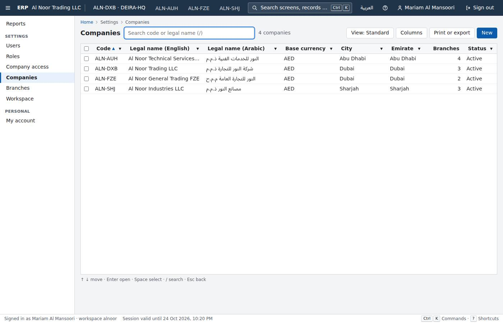

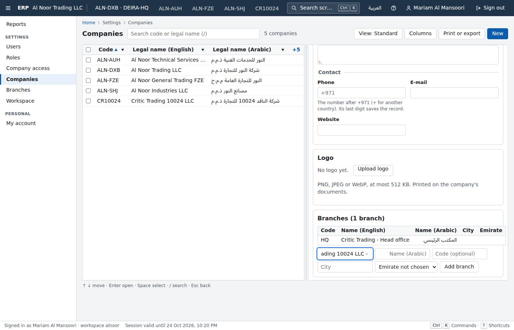

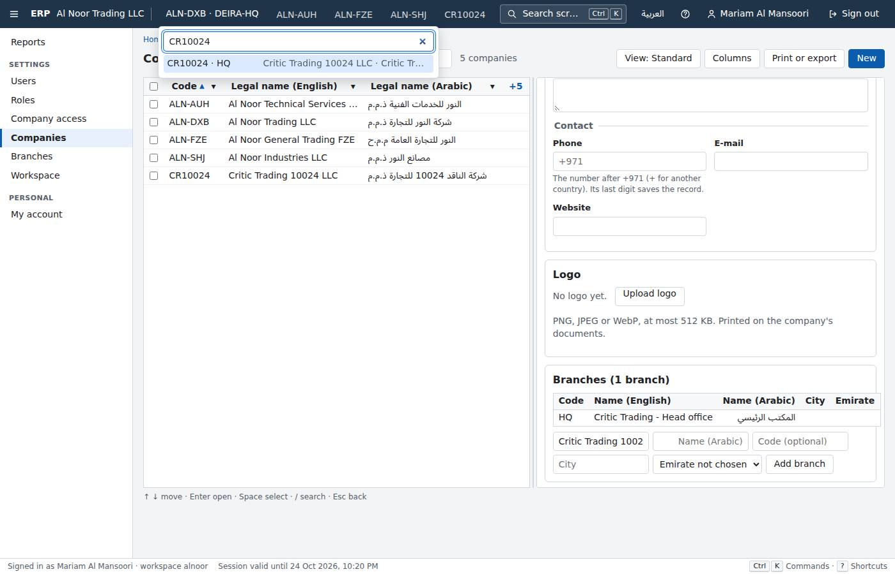

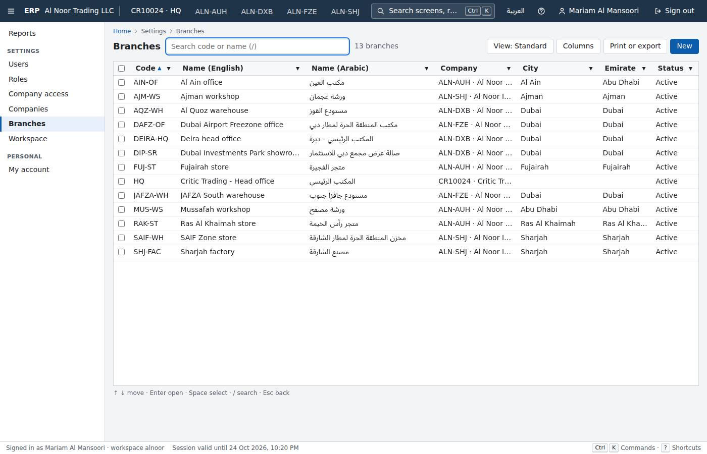

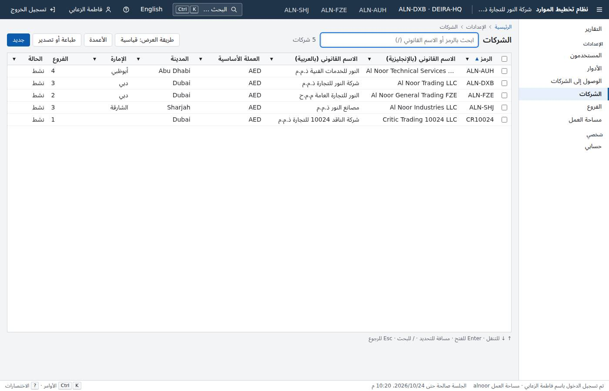

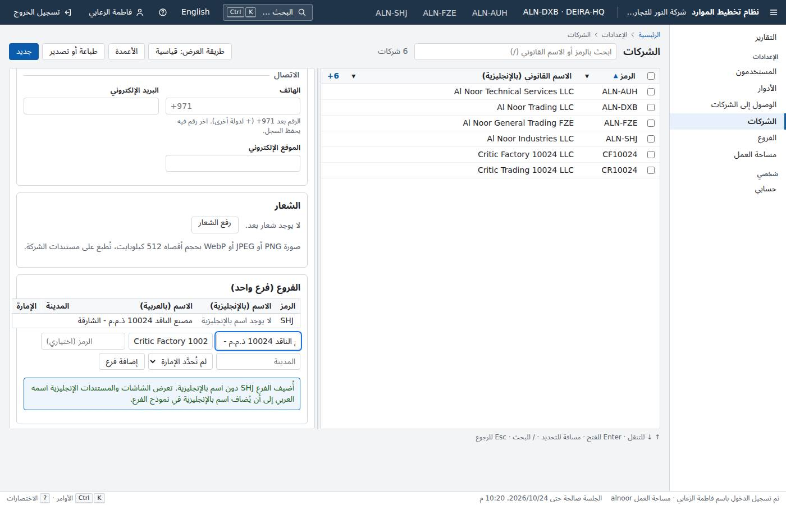

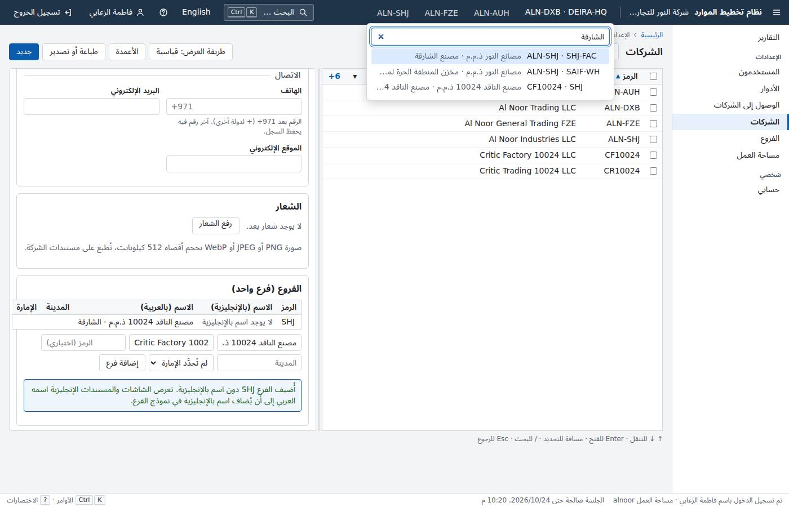

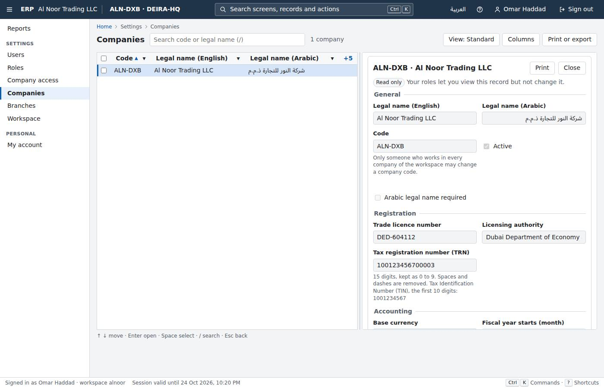
Round 15 · judged 2026-10-24T10:54:02Z · commit 6602f2ec59
Users, roles and permissions
Wave 1 · 12 rounds judgedDone for now · WIN in round 12This round added device approval to the user's Sign-in history tab. The form has a device code field, a 'Let it in' button and the palette command identity.users.approveDevice. In the shipped product it shows only when canUnblock holds (identity.users.update, and the user is within the caller's access). It works: screenshots 03 to 06, walks w2 in English and Arabic. Another tenant's admin gets 404, a helpdesk role is refused the Administrator, and a second fresh browser stays paused. But nothing checks the negative case, so the bar's 'screens hide what the user cannot do' is unguarded on this piece's newest screen. Remove `canUnblock &&` from canApprove and the form and its palette command are offered to a user who may only read the history (identity.signIns.read). Examples are an auditor or a branch supervisor, or an administrator looking at someone who also works in a company they do not. All 528 web unit tests pass anyway, including the identity screens' permission gate and the palette and keyboard sweeps. The identity plant self-test still reports 13 of 13 caught, and e2e shows nothing. The server refuses the submit, so this is not a hole today. But the next edit to HistoryTab can ship it unseen. Fix: - Add the device form and its command to the identity screens' permission gate. Render the History tab of a paused user (shared gateway, and a pending approval) for a user with users.read and signIns.read only, and for one whose target is refused. Assert no device code field, no 'Let it in' and no enabled identity.users.approveDevice in the palette. - Add this exact plant to scripts/identity-plant-self-test.mjs so the gate must catch it. - Also hide or reword the advice 'enter the device code their sign-in screen shows below' for viewers who have no form below (screenshot 11).
- G1 tenant isolation of the product as built (API, database role, exports, reports, jobs, files) PASS — No leak found. API attack (attacks/g1-attack-all.mjs, g1-a-vs-b-r13.txt, g1-run.log): alnoor's admin made 1,981 judged calls against gulfsteel on every OpenAPI route (114 operations, attacks/routes.txt), the new POST /api/identity/users/{id}/devices/approve and /me/devices/approve included. The calls used B's ids in paths and bodies, four tenant-switch headers, tenant query fields, every list export (CSV, XLSX unzipped, PDF; English and Arabic) and the reports with B's role and company ids. Result: 0 leaks, and B's state hash was the same before and after. Gulfsteel's admin approving an alnoor user's device answers 404 (attacks/device-approval.txt). Database as erp_app (attacks/db-app-role.txt): - no tenant bound: 0 rows; - bound to A: 100,005 users and 200,079 audit rows, 0 of B's; - UPDATE/DELETE of B's rows changed 0 rows, an INSERT for B was refused by RLS; - row_security=off, SET ROLE erp_owner/postgres/erp_auth and DISABLE RLS were refused; - all 17 tenant tables have RLS enabled and forced; - bound to A, writing B's device_approval_hash changed 0 rows, and verify_sign_in answers nothing. No jobs or files exist yet beyond the report endpoints, which the attack covered.
- G1 gate catches tenant leaks planted in this piece's surface PASS — Plants are in plants/r13-plants.diff. The run was the planted .NET gate and identity suites through verify-slot (plants/plant-run.sh, plant-inside.sh, run-server/gates.log). Both plants were live on a planted stack (plants/plant-demo.txt). - L1: GET /api/identity/users/{id} answers from a DI-singleton memo keyed by id only. Tenant A read B's user (200). It was caught by G1HttpIsolation (86 leaks), G1NonInterference and G1ProcessState ('singleton ...UserAnswerMemo.Items'). - L2: this round's DeviceApproval migration replaces identity.sign_in_attempts' tenant_isolation policy with USING (true). Bound to A, erp_app saw other tenants' rows. It was caught by both G1DatabaseIsolation tests ('tenant A sees 3 rows of other tenants'; the policy is not the standard one).
- G2 permissions of the product as built (restricted roles, escalation, screens hide) PASS — Walk w1 (screenshots 01 and 02): a user created by keyboard with the Read-only role (Alt+N, e-mail, Alt+O, 'read', Enter, Ctrl+Enter) signs in with the set-up code and chooses a password. They see no New user, Alt+N opens nothing, and their record is read-only with no Save. API calls with their session: POST users 403, POST roles 403. Escalation (attacks/escalate.txt), by a helpdesk role holding users and roles read/update/create, all refused with 403: - assign themselves Administrator, or Administrator in one company; - add permissions to their own role, create a role beyond their own, copy Administrator; - give others Administrator; - edit, deactivate, reset, sign out, unblock or delete the Administrator. New this round: letting a device of the Administrator in is refused 403 (userWorksBeyondOwnCompanies), and on oneself through the admin endpoint 403 (notOnYourself). Control for U1 below (walks/u1-check-real.txt, screenshot 11): a user who may only read the sign-in history is offered no device form.
- G2 gate catches actions with no permission check planted in this piece's API (devices/approve) PASS — Both plants were live on the planted stack (plants/plant-demo.txt), and both were caught (run-server/gates.log). - P1: POST /api/identity/users/{id}/devices/approve requires identity.profile.update instead of identity.users.update. An auditor without users.update let a device in (200). Caught by G2PermissionTests: 'declares identity.profile.update; the reviewed map identity.txt says identity.users.update'. - P2: the same endpoint skips TargetProblemAsync. The auditor let a device of the Administrator in (200). Caught by G1CompanyIsolation ('company X administrator -> POST .../devices/approve ... answered 200, expected a refusal'), the G2AccountTakeover tests and G1SignInThrottle (approving oneself answered OK, expected Forbidden).
- G2 gate catches a screen offering an action the user cannot do, planted in this piece's own new screen (screens hide what the user cannot do) FAIL — Plant U1 was MISSED. The plant is one line in web/src/modules/identity/UserPanel.tsx HistoryTab (plants/r13-plants.diff): `const canApprove = canUnblock && (sharedPaused || !!history?.deviceApprovalUntil)` loses `canUnblock &&`. It is live. A user whose role grants only identity.users.read and identity.signIns.read opens a paused user's Sign-in history. The planted screen offers them 'Let a device sign in': the device code field, the 'Let it in' button and the palette command identity.users.approveDevice (screenshot 10). The shipped product offers none of it (screenshot 11, walks/u1-check-*.txt). Nothing caught it: - The web unit suite passed 528/528 with the plant (plants/web-U1-planted-full.log). That suite includes the identity screens' permission gate and the palette and keyboard sweeps, and the identity plant self-test still reports '13 plants, all caught'; none of those plants is this one. - The e2e suite against the planted stack passed 111 and failed 2 (plants/e2e-planted.log). Both failures came from L1's stale memo: an edited e-mail and a language read back old. Neither is about the device form. - The only device-form tests are positive (screens.test.tsx 'lets one device in...', sign-in.spec.ts:132).
- G3 clean clone: ./erp verify (build, migrate, seed, every test) PASS — Fresh clone of 047f1920. Run 2: 'verify passed in 3259 s' timed from 'slot taken' at 09:52:16Z; processor time 9,559 s against a maximum of 10,500. Counts: .NET 732, web unit 528, e2e 113, compare 447, build 6, each at its ratchet minimum (verify-critic-p03-identity-r13-run2.log). Run 1 (slot taken 08:07:43Z) had every test green, but the ratchet failed on processor time: 10,891 s against 10,500. Load reached 83.59; another critic's verify and my own demo, comparison runs and planted e2e stack ran beside it (verify-critic-p03-identity-r13-run1.log, verify-run1-failed-ratchet/). The integrator's alone run used 9,135 s. Re-run when quieter: passed.
- G3 clean clone: ./erp up (running seeded demo) PASS — Fresh clone, ERP_PROJECT=c-p03-identity-r13 ERP_HTTP_PORT=20350 ERP_DB_PORT=20351 ./erp up. The demo was running in 72 s with 100,005 users (erp-up.log); the ports and project overrides were honoured. With ERP_SEED_USERS_CSV it took 77 s (erp-up-dataset.log).
- Rule gates (licences, no float money, EN/AR string parity, audit coverage) and the ratchet PASS — These ran inside verify run 2, and the ratchet passed with every count at or above its minimum. The counts rose from round 12's 701/524/111/415 to 732/528/113/447. Device approvals leave audit rows that name the actor (audit.entries, table users, device_approval_hash/until old and new).
1826 / 1826 passed
0 failed · 0 skipped · 3259s
Clean clone → demo: PASS in 3259s
| Task | Ours | Odoo | Winner |
|---|---|---|---|
| create-restricted-user (named) | 5 · 37 · 1.918s · 20.91s | 10 · 46 · 11.532s · 30.05s | ours |
| find-user (find one user among 100,000) | 3 · 3 · 0.867s · 8.29s | 6 · 5 · 2.381s · 10.35s | ours |

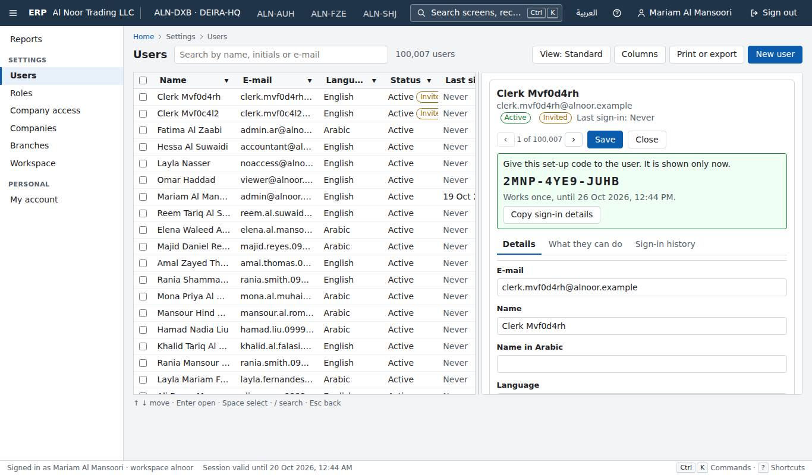

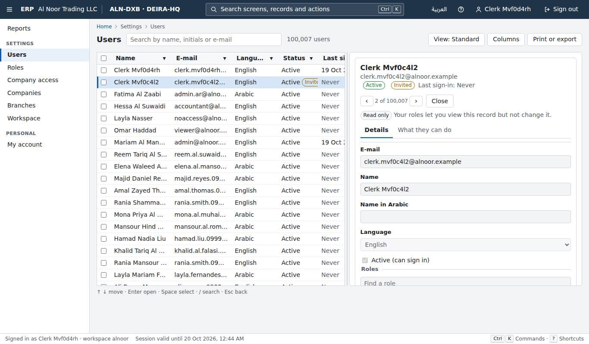

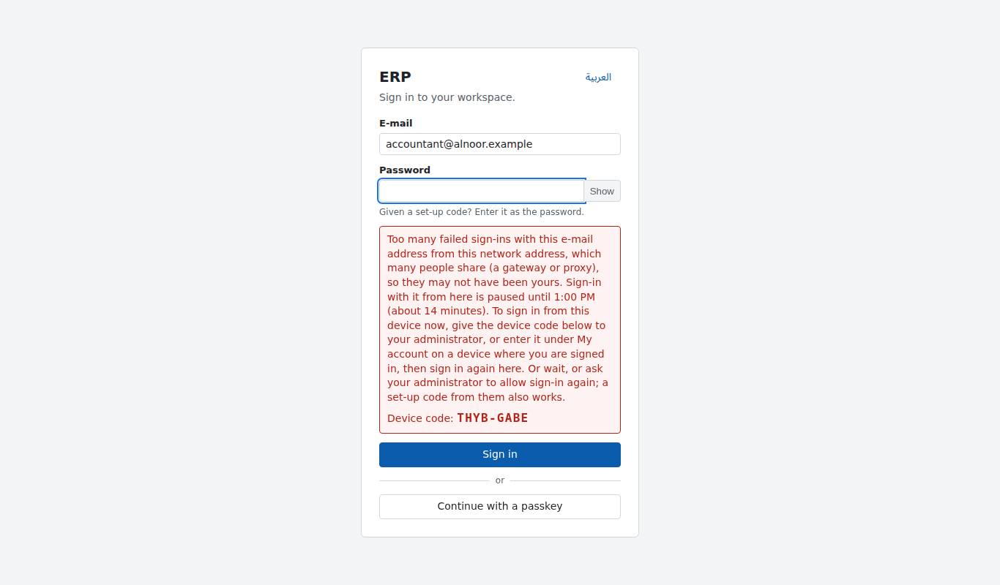

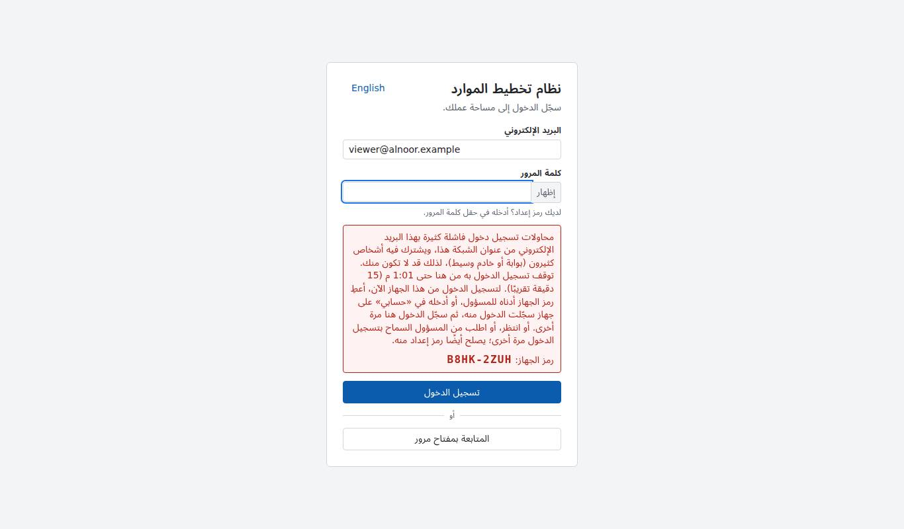

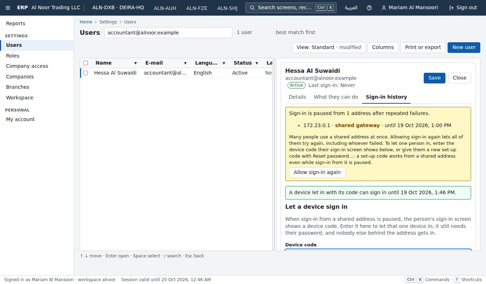

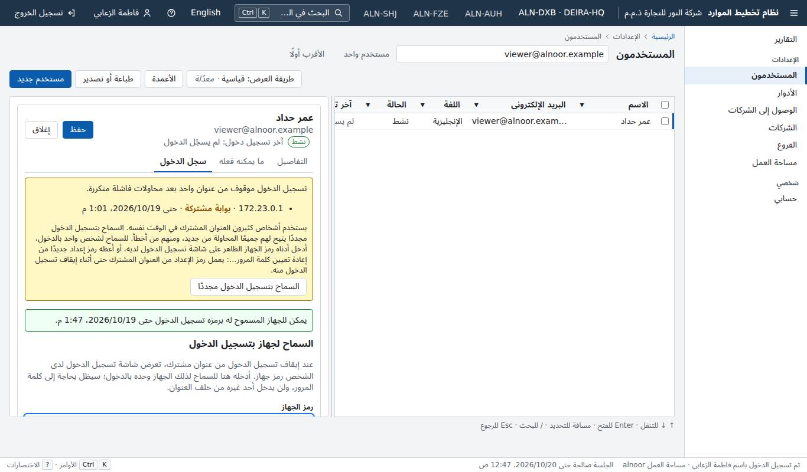

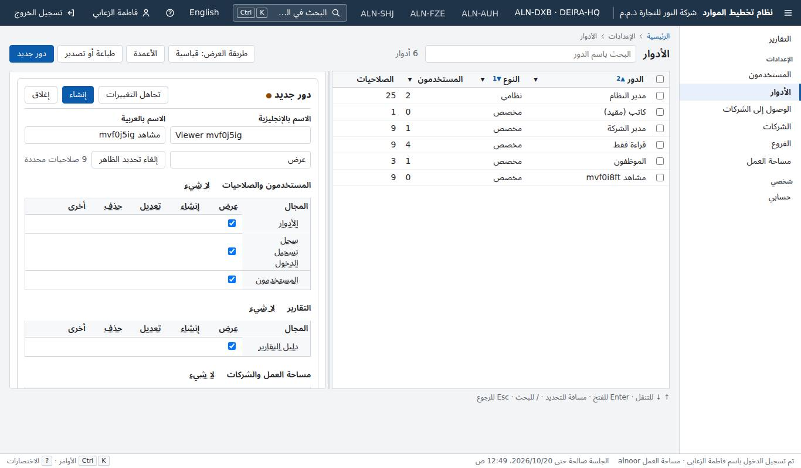

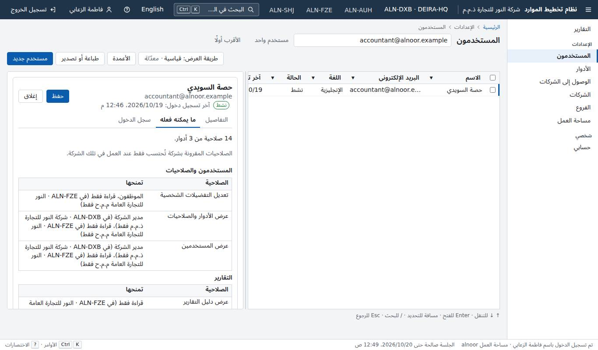
Round 13 · judged 2026-10-19T10:46:52Z · commit 047f1920
English/Arabic app shell
Wave 1 · 11 rounds judgedDone for now · WIN in round 10Every report will build on this print base: invoices, delivery notes and statements a UAE trading company hands to customers. On the A4 printout of the users list, the e-mail column breaks addresses at any character, for example 'lang.tester@alnoor.ex' then 'ample', or 'rahul.reyes.100000@a' then 'lnoor.example'. The last sign-in date-time is also split over two lines. In Arabic the RTL column order makes this worse, because the narrow Latin columns are squeezed beside wide Arabic text. Nothing is clipped or off the page (print12.json: no header outside 718 px, no clipped cell), but a printed document with half-words in its addresses and dates looks unfinished. On a customer document the same break would cut a TRN, an IBAN or an invoice number. Fix: in the shared print stylesheet, never break inside identifier-like values (e-mail, codes, numbers, dates). Give such columns white-space: nowrap or break only at '@' and '.', size the columns from their content, and shrink or wrap the free-text columns instead. Add an e2e print check, in English and Arabic, that no e-mail or date cell renders on more than one line.
- G1 tenant isolation of the product (my own attacks) PASS — isolation-probe.txt (drivers/isolation_probe.py, adapted from the round 12 critic's tool). Signed in as admin@alnoor.example, I sent 1,834 requests at Gulf Steel. They covered every documented GET with B's 30 ids and codes, tenant query fields and X-Tenant headers, plus 802 writes: every documented PUT/POST/DELETE with B's ids in the route and body. They also covered exports of 5 lists as pdf, csv and xlsx with tenant parameters, and the preferences write with B's ids in the body, query and headers. Result: 0 of B's 33 markers in any answer, and no write on a B id succeeded. B's own views were unchanged except /api/tenancy/workspace. That one is a 404 on a path that does not exist, and only its traceId varies (shown twice in the same file). db-rls.txt: all 17 tenant tables have RLS enabled and forced. erp_owner, erp_app and erp_auth are not superusers and have no BYPASSRLS. erp_app with no tenant bound sees 0 users and 0 audit rows. With A's tenant bound it sees 100,005 users and 0 of B's, and an UPDATE of B's rows touched 0 rows. Shared device (shared-device-product.json): A opens a record, presses Alt+L and signs out. B then signs in on the same tab and lands on Home. The device key holds only 'ar'.
- G1 gate self-test on this piece's surface (plants) PASS — plants/. CL3b, round 12's missed plant, re-applied unchanged (plant-client-CL3b-r12-regression.diff): it puts a record address inside the device language key. CAUGHT by the web unit suite, which failed 2 of 551: the clientIsolation tests 'with B's record open, B switches every device setting and signs out ...' in English and in Arabic with Arabic-Indic digits (plant-client-CL3b-r12-regression.log). SL3 (plant-server-SL3-last-arabic-name-static.diff): the preferences answer falls back to the Arabic display name last saved by any caller, kept in a process-wide static. CAUGHT by G1ProcessStateTests.Process_wide_state_is_immutable_or_reviewed, which names ProfileEndpoints._lastArabicName (plants-SL3-gates.log). The runtime checks G1NonInterference and the 3 G1ShellAnswers tests passed on it; see other findings.
- G2 permissions (product and plants on this piece's surface) PASS — CP1 (plant-client-CP1-palette-action-without-permission.diff): the palette's offeredActions no longer checks an action's own permission, only its screen's. CAUGHT: 10 web tests failed, including paletteActions 'identity.users.new: shown only to a user whose roles grant identity.users.create' and 'every palette entry, run by a user who may only read, sends nothing but reads'. SP4 (plant-server-SP4-post-alias-without-permission.diff): a POST alias of /me/preferences that only needs a sign-in. CAUGHT: the host refuses to start ('POST /api/identity/me/preferences => UpdatePreferences: declares no permission'), and 33 G2PermissionTests fail (plants-SP4-gates.log). Product (roles-ui.json): noaccess has no navigation and no palette 'New' actions, and a deep link to /identity/users/new shows 'No access'. viewer gets no 'New' actions.
- G3 clean clone: one command builds, migrates, seeds and passes all tests; one command runs the demo PASS — Fresh clone at b4db2fd7, './erp verify' through the slot script with ERP_PROJECT=c-p04-shell-r13 and ports 20450/20451/20460/20461. Slot 1 was taken at 2026-10-23T19:53:04Z after a 0 s wait. Result: 'verify passed in 4402 s' and 'Ratchet check passed'. dotnet 774/774, web unit 551/551, e2e 120/120, compare 486/486, build 6/6. Processor time was 7,096 s against the 10,500 s maximum. './erp up' served the seeded demo (100,006 users) in 37 s (up.log). Ports and the project came from the environment as the README documents.
- Rule gates (licences, decimal money, EN/AR string twins, accessibility, audit) PASS — Inside the verify: 'String check passed: 81 source files, 819 keys in English and Arabic, 82 plural messages'; 'Accessibility check passed: 1148 JSX elements checked'. The licence and decimal-money gates are in the green .NET suite. axe-core WCAG 2 A/AA found 0 violations on sign-in, home, users, a user record, the palette and the help sheet, in English and in Arabic (axe.json). db-audit-preferences.txt: every language and digit switch wrote an audit.entries row with the actor (the user), the time, the record and old/new values.
1937 / 1937 passed
0 failed · 0 skipped · 4402s
Clean clone → demo: PASS in 4402s
| Task | Ours | Odoo | Winner |
|---|---|---|---|
| switch-to-arabic | 1 · 0 · 0.211s · 2.65s | 6 · 1 · 1.662s · 15.28s | ours |
| reach-screen-keyboard | 2 · 2 · 0.103s · 3.66s | 3 · 8 · 0.591s · 3.99s | ours |
| open-third-user-keyboard (critic-added r2, kept) | 6 · 6 · 0.2s · 6.13s | 8 · 13 · 0.78s · 6.74s | ours |
| new-user-keyboard (critic-added r7, kept) | 3 · 4 · 0.146s · 2.87s | 4 · 10 · 0.799s · 5.9s | ours |
| keyboard-navigation (open the third contact by keyboard) | – | 9 · 10 · 0.741s · 7.25s | not-compared |

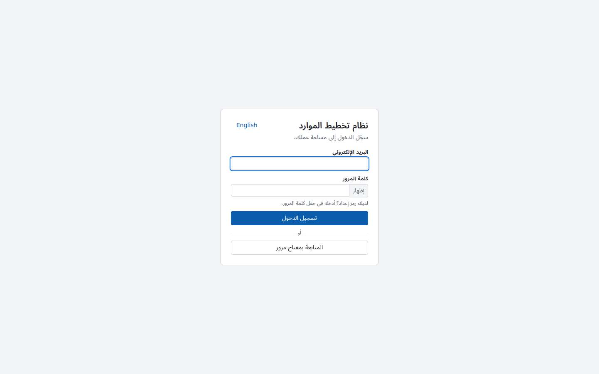

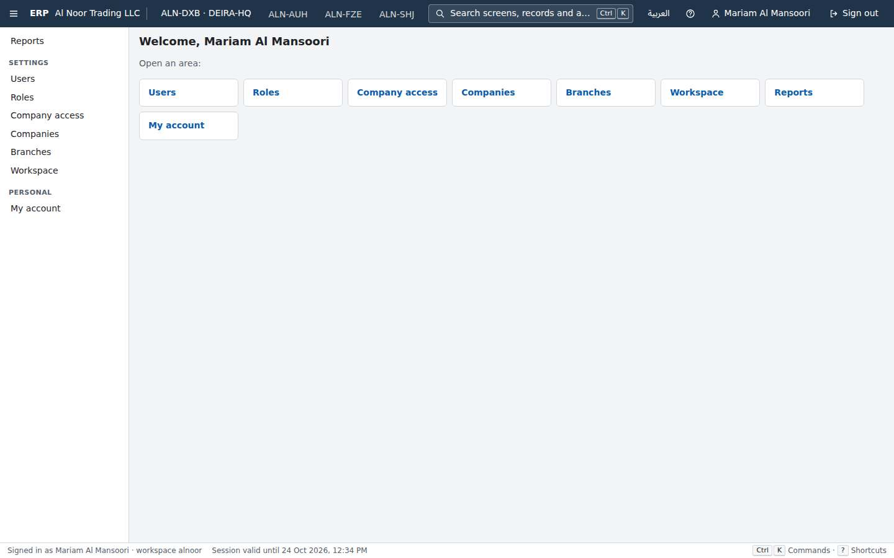

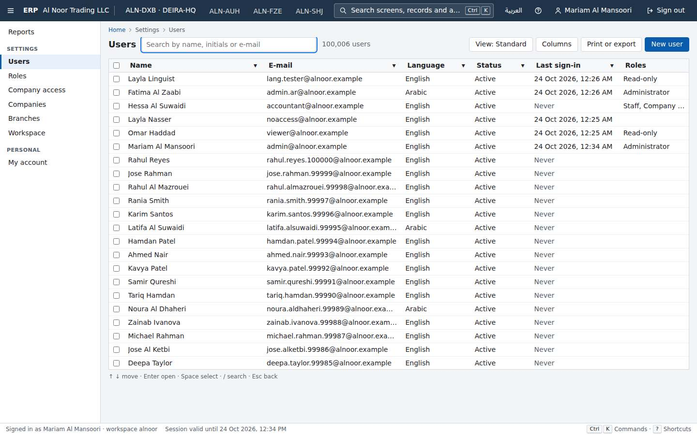

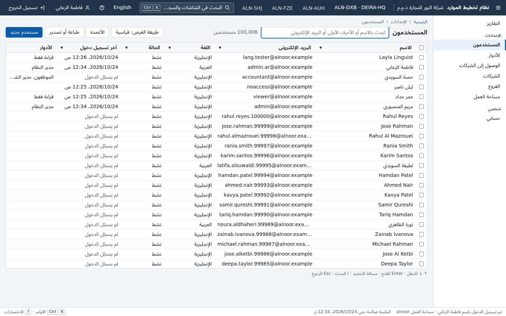

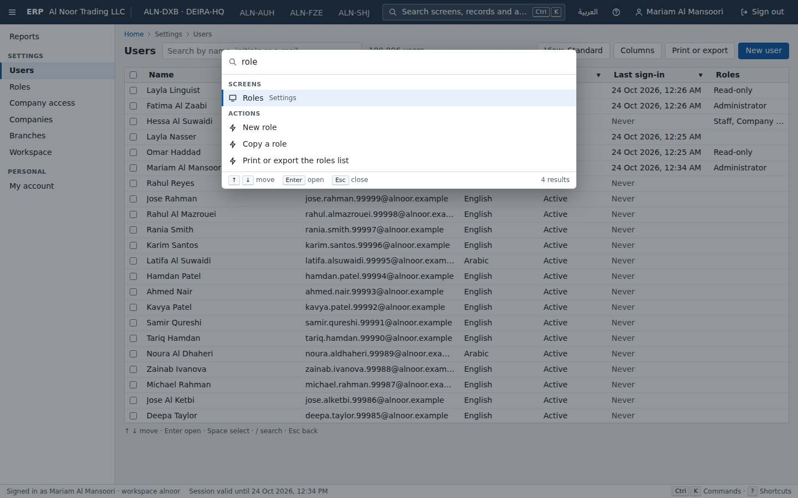

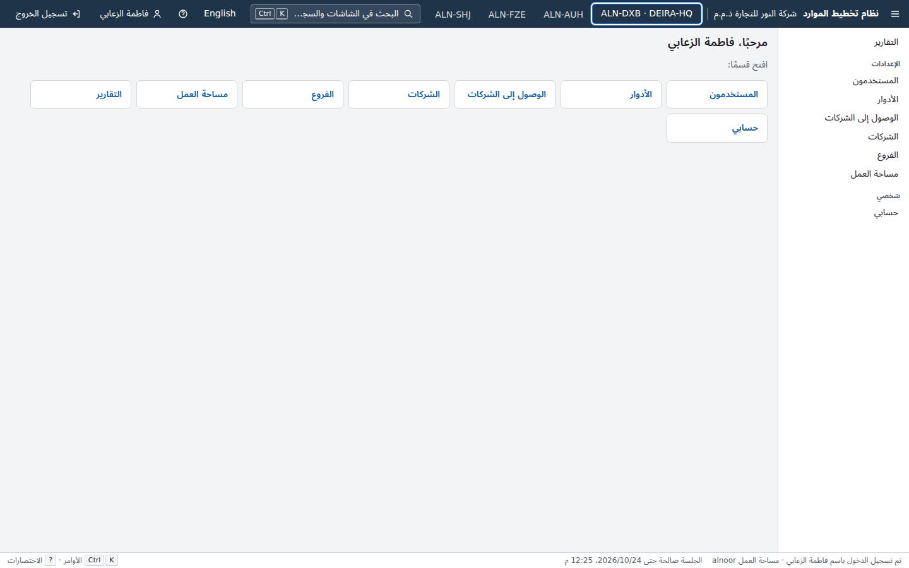

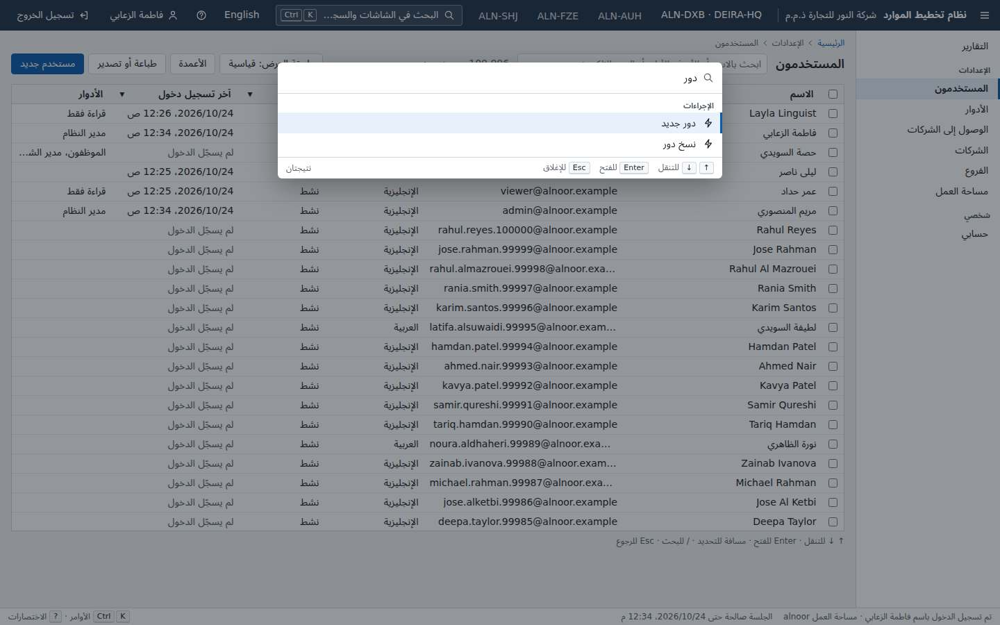

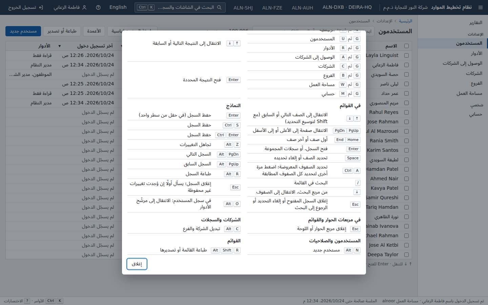
Round 13 · judged 2026-10-23T21:07:04Z · commit b4db2fd7ec
List and search framework
Wave 1 · 8 rounds judgedDone for now · WIN in round 15Every later 100,000-row list (Contacts, invoices, stock) will be a module screen built on p05's list. Round 14's L14 is now caught for code inside web/src/kernel/lists, by browserReach.test.ts (static) and deviceStores.test.tsx (behaviour). The e2e test 'keeps no row of a list on the device' covers only the Users list. Outside that folder, nothing changed. G1ClientStateTests.Carriers still has no navigator.storage, getDirectory, FileSystem* or storageBuckets pattern. kernel/deviceState.ts forgetIdentity() clears localStorage, sessionStorage, the default bucket's IndexedDB and Cache Storage, cookies and window.name. It never empties the origin private file system or any non-default storage bucket. The client-isolation e2e tabState reads neither one, and does not check navigator.storage.estimate. So a module screen or shared kernel helper that keeps list data there is unseen by the shared gate, and would also survive Sign out. I checked in Chromium 1243 on this product's origin that navigator.storageBuckets exists. Data written there does not show in indexedDB.databases() or the default getDirectory(), but it does count in navigator.storage.estimate().usage, so an estimate check would see it. Fixes (owned by p04's client gate and kernel): (a) add the origin private file system and storage buckets to G1ClientStateTests carriers, with a self-test; (b) make forgetIdentity empty getDirectory() and every storageBuckets.keys() bucket, or send Clear-Site-Data: "storage" on sign-out; (c) in client-isolation.spec.ts, after Sign out, require navigator.storage.estimate().usage to be no higher than before sign-in, as lists.spec.ts already does for the Users list.
- G1 tenant isolation (live attack on the product as built) PASS — I attacked from the clean clone's demo, signed in as admin@alnoor.example against gulfsteel. attack-api-lists.txt: GET, PUT and DELETE on B's personal and shared view ids, through both views/{id} and shared-views/{id}, all got 404, and B's views kept their versions. A's views listing did not contain B's canary. Searches and filters for gulfsteel returned total 0. B's keyset cursor in A's query gave only A's rows. A's group counts add up to A's total of 100,005. The filtered CSV export held no gulfsteel row. Anonymous calls with X-Tenant-Id, X-Tenant or X-Workspace got 401. attack-sweep-get.txt: 523 GETs covered every GET route in the OpenAPI document (69 paths). They used B's user, role, company, branch, access and view ids, plus B's search terms, filter and cursor, in JSON and CSV. Result: 0 leaks across 217 markers. attack-sweep-write.txt: 912 POST, PUT, PATCH and DELETE calls on every write route that takes an id, using B's ids, got only 400 or 404. B's users, roles, companies, branches, access and views were byte-identical before and after. The bulk 'all matching' activation with B's search matched 0, or returned 409 when given B's count. db-inspect.txt: erp_app, erp_auth and erp_owner are neither superuser nor BYPASSRLS. As erp_app with no tenant set, identity.users and lists.saved_views return 0 rows. lists.saved_views has RLS forced (tenant_isolation policy). pg_class is refused to erp_app.
- G1 gate catches tenant leaks planted in p05's surface PASS — Plant L15 (L15-shared-view-memo-by-id.patch) adds a process-wide memo of shared views keyed by id only, in ViewEndpoints.GetShared. Three tests caught it (run-L15-P15-g1-g2.log): G1ProcessStateTests ('reached from static Erp.Modules.Lists.ViewEndpoints.SharedMemo'), G1HttpIsolationTests (730 leaks, for example 'tenant A administrator → GET /api/lists/identity.roles/shared-views/<B id> → 200: response contains tenant B marker') and G1NonInterferenceTests. A regression check on round 14's L14 (the list's first page kept in the origin private file system) fails 4 tests (run-L14-regression-web-lists.log): browserReach.test.ts 2, and deviceStores.test.tsx 'puts no row value or id in any store...' and 'never shows another tenant's rows that a poisoned device hands back'.
- G2 permissions (product, and gates on a planted fault in p05's surface) PASS — Plant P15 (P15-shared-view-update-needs-only-read.patch) makes PUT /api/lists/{key}/shared-views/{id} declare only the list's read permission instead of lists.views.share. Three G2PermissionTests caught it. One was Every_list_endpoint_needs_the_lists_own_permission_and_shared_view_writes_need_sharing: 'PUT /api/lists/tenancy.companies/shared-views/{id:guid} answered 200 to a reader of tenancy.companies without lists.views.share'. The other two were No_endpoint_that_changes_data_is_guarded_by_a_read_permission and Every_module_route_is_under_a_reviewed_map.... In the browser (ui-views.txt), viewer@alnoor's Views menu offers only 'Save as a new view…', with no share box. Their selection bar offers Copy only.
- G3 clean clone (one command: build, migrate, seed, all tests) PASS — I ran ./erp verify from a fresh clone of 3251b6df through verify-slot.sh. The slot was taken at 08:54:18Z after a 6,660 s wait. Result: 'verify passed in 4804 s'. Processor time was 8,168 s, against a maximum of 10,500. The wall-time maximum was not judged because the machine was busy (load peaked at 46). Tests: dotnet 776, web 582, e2e 121, compare 486, build 6. All passed; none failed or were skipped. The demo command (./erp up with ERP_SEED_USERS_CSV, ERP_PROJECT=c-p05-list-search-r15, ports 20550/20551 from the environment) brought up the 100,005-user demo in 78 s.
- Rule gates (licences, decimal money, EN/AR strings, audit, list contract) PASS — These run inside the .NET and web stages of the passing verify. Audit, checked in the database: every saved-view insert my attacks made has a row in audit.entries (actor_kind user, with the changed fields). lists.saved_views carries tenant_id plus created and updated by/at.
1971 / 1971 passed
0 failed · 0 skipped · 4804s
Clean clone → demo: PASS in 4804s
| Task | Ours | Odoo | Winner |
|---|---|---|---|
| find-user (find one user among 100,000; p16 Contacts is not built, so the comparison dataset's 100,000 users) | 3 · 3 · 0.936s · 8.29s | 6 · 5 · 3.41s · 10.35s | ours |
| open-third-user-keyboard (open a record from the list by keyboard only) | 6 · 6 · 0.296s · 6.13s | 8 · 13 · 1.198s · 6.74s | ours |
| find-record (find one contact among 100,000) | – | – | not-compared |

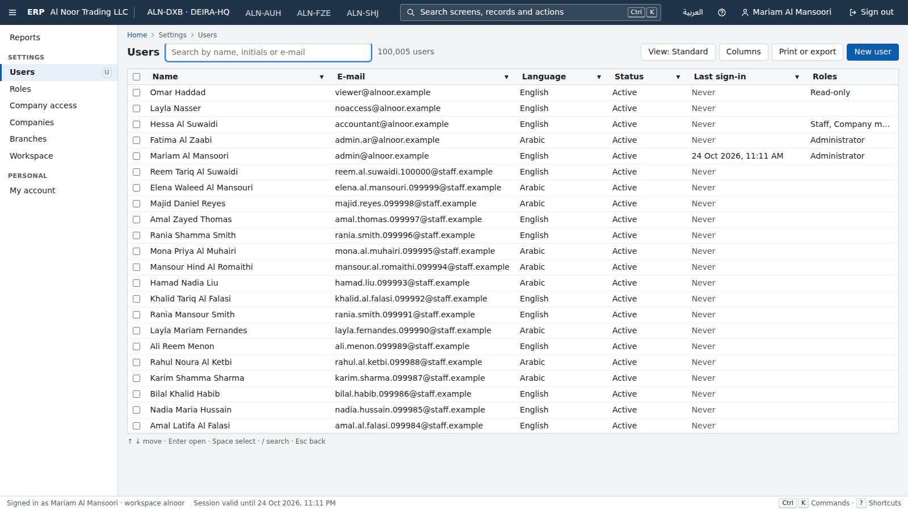

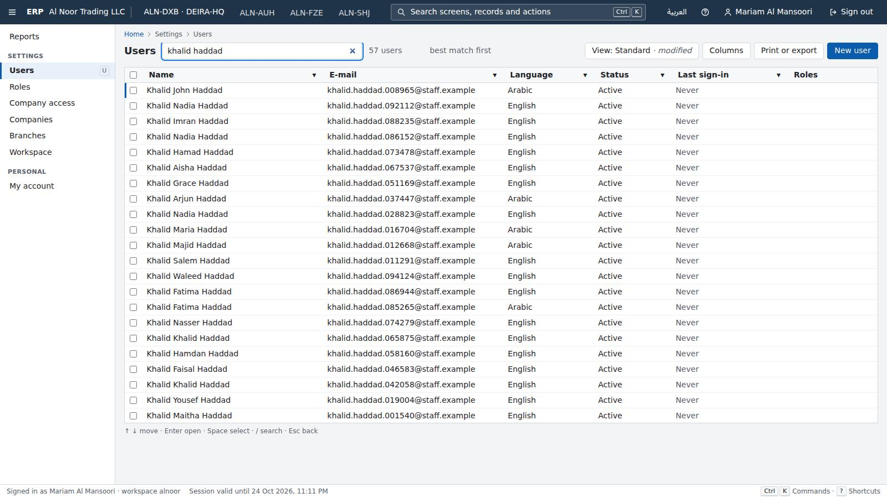

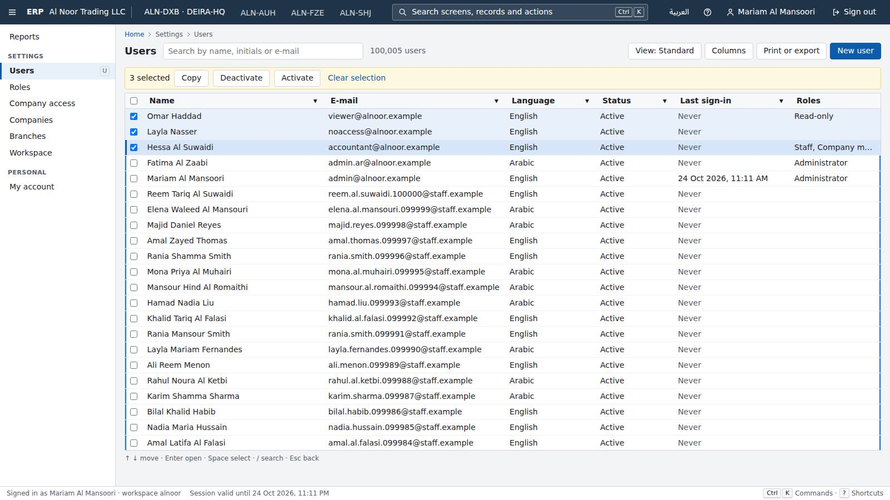

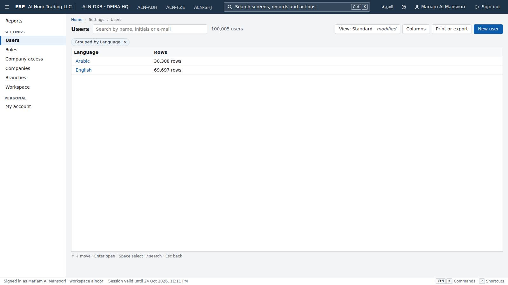

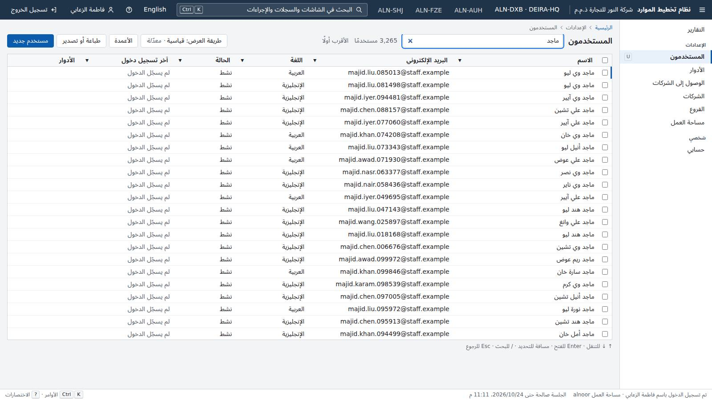

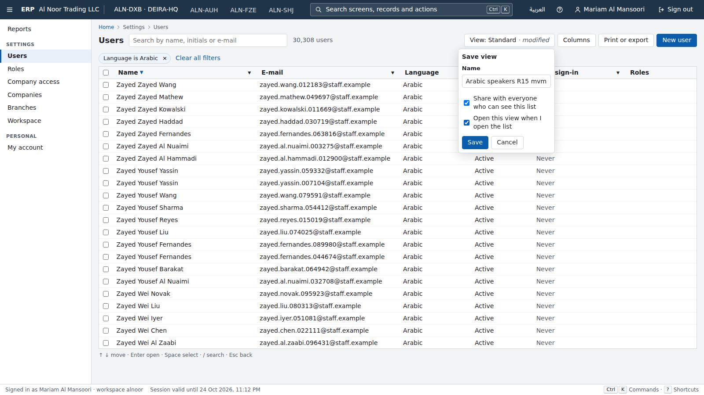

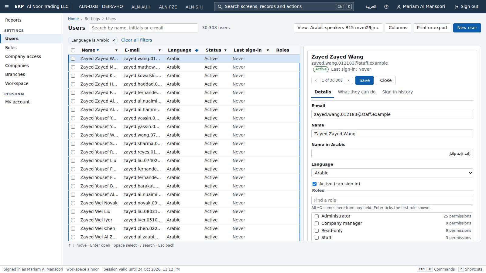

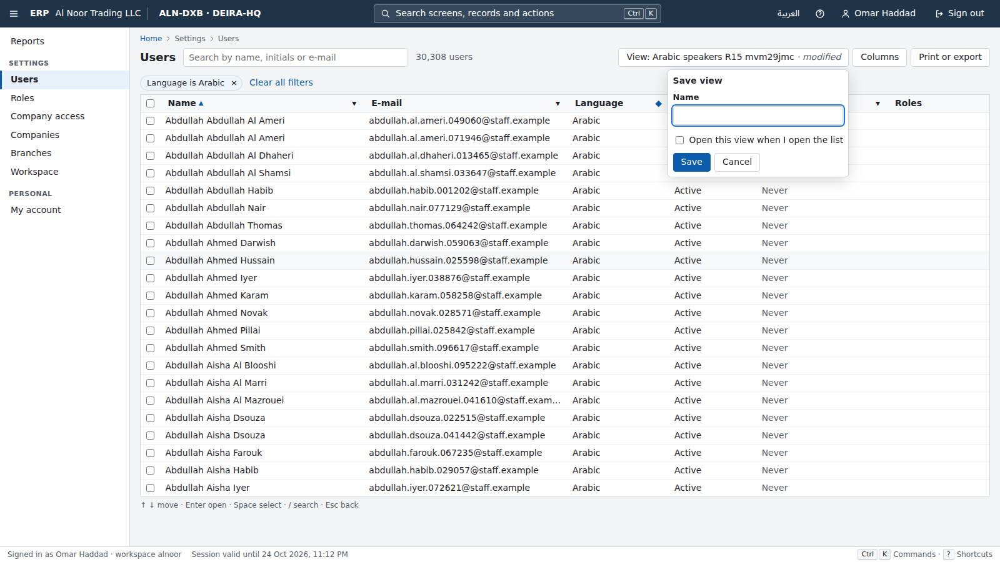
Round 15 · judged 2026-10-24T10:15:21Z · commit 3251b6df
Form and report framework
Wave 2 · 9 rounds judgedDone for now · WIN in round 8This round fixed round 8's gap. PDFs, CSVs and workbooks now hold the whole selection (100,005 users: a 3,847-page Arabic PDF in about 22 s), and the screen offers 'Print all rows (PDF)' and Ctrl+P. For a UAE trading or manufacturing company these long files are how data leaves the system: price lists, stock lists and statements go to auditors, free-zone authorities and customers. The code path only runs when a document holds more rows than the screen (ReportLimits.ScreenRows, 2,000). No gate ever reaches that path. G1HttpIsolation, G1BranchScope, G2ReportData and G2CompanyRole run on environments with about 25 users per tenant. G1ListVolumeTests has 100,000 users per tenant but never prints, and G1PrintFileTests looks only for erp-print-* files in the top of /tmp. Every gate therefore tests the small-document branch only. Two real faults confined to big files passed all 193 gate tests and all 64 report tests. L12c is a 10-minute PDF spool keyed on the document, not the tenant, so Gulf Steel receives Al Noor's 100,005-user PDF. P17 is a whole-selection file that names roles to a user who gets 403 on roles. The same two faults at every size are caught (L11: 1,026 leaks; P17u: G2ReportData and G2CompanyRole). This is the same class of blind spot as p05 round 9's L12, where a gate fixture was smaller than the code's threshold. Needed: (1) G1: tenant B prints every printable list and report as a whole-selection file (pdf, csv and xlsx, en and ar, with the documented parameter combinations), before and during A's attack. A then asks for the same requests and is judged as now. This can run on a host with Erp:Reports:ScreenRows below the fixture's row counts (for example 3), or at the volume fixture. (2) G2ReportData and G2CompanyRole: the same, for every permission set. (3) Look for print/spool files anywhere under the temp folder, not only erp-print-* at its top. (4) Plant-test with L12c and P17.
- G1 tenant isolation (product as built) PASS — Every G1 test passed inside verify (gate project 193/193). I attacked the seeded demo myself through the API, signed in as Gulf Steel against Al Noor (tools/attack.mjs, api/attack-print-surface.txt). I sent 10,208 requests: every report and printable list in json/csv/xlsx/pdf and en/ar, with Al Noor's company, branch, role and user ids in every matching parameter, 'Noor' text, disposition=inline, numerals=arab with timeZone, groupBy, and tenant/tenantId/companyId fields. Headers were none, X-Tenant-Id, X-Company-Id, X-Branch-Id and X-Workspace. I also sent GET and PUT to each Al Noor company. Result: 0 leaks and 0 victim rows changed. The database (api/db-rls.txt): erp_owner, erp_app and erp_auth are neither superuser nor BYPASSRLS, and all 17 tables with tenant_id have RLS enabled and forced. New file path: no erp-print-* file is left in the app container's /tmp after 100,000-row prints. Four whole-list PDFs at once kept tenant B's list calls under 70 ms (api/noisy.txt).
- G1 catches a leak planted in p06's surface FAIL — Plant L12c (plants/plant-L12c-P17-whole-selection-files.diff, ReportEndpoints.Output) adds a disk spool for PDFs longer than the screen. The spool lives in /tmp/erp-pdf-spool for 10 minutes and is keyed on the document's key, language, numerals, groupBy, parameters, columns and file limit, but not on the tenant. Any PDF request is answered from it first. Live on the planted stack with the shared dataset (plants/live-L12c.txt): Al Noor prints /api/reports/lists/identity.users?format=pdf&language=en (100,005 users). Gulf Steel then asks for the same URL and receives the identical 9,543,087-byte PDF of Al Noor's users. Gate run (plants/run-L12c-P17.log, toolbox image, 54 min): Erp.Gates.Tests 193 of 193 passed, and Erp.Modules.Reports.Tests 64 of 64 passed. Control (plants/plant-L11-P17u-controls-every-size.diff, run-L11-P17u-controls.log): the same spool applied at every size is caught. G1HttpIsolation found 1,026 leaks and G1BranchScopeAttack found 10. So the gates are blind only to documents longer than the screen's 2,000 rows, which is exactly the path this round added. Each gate tenant holds about 25 users, and G1ListVolumeTests (100,000 users per tenant) never prints. Note: my first form of the plant (L12, keyed on the raw query string) was caught only by the static request-enumeration rule (G1TenantSourceTests and G1HttpIsolation's input check), not by any behavioural check (plants/run-L12-P17.log).
- G2 permissions (product as built) PASS — All G2 tests passed inside verify. In the browser (browser/explore-r9.log), the viewer's company form has 21 of 21 fields disabled and no Save button; typing 971505550199, then Enter, Ctrl+S and Alt+Z, sent 0 writes. I created a clerk role through the API holding identity.users.read and reports.catalog.read only. Its holder gets 403 on /api/identity/roles. On the unplanted product the clerk's prints carry no role names (shown on the planted stack by the JSON and the control).
- G2 catches permission faults planted in p06's surface FAIL — Plant P17 (same diff, ReportEndpoints.PrintListAsync/NamesAsync) skips the caller.Has(roles list permission) check when naming another list's records, but only in a whole-selection file (rows > ReportLimits.ScreenRows). Live (plants/live-P17-on-L12c-stack.txt, also live-P17.txt): the clerk who gets 403 on roles prints the users list as CSV (100,005 rows), and the file names roles 'Administrator', 'Read-only' and 'Staff'. Its JSON names none. Every G2 test passed with P17 planted (run-L12c-P17.log: 193/193; Reports tests 64/64). Control P17u, the same fault at every size, is caught by G2ReportDataTests, G2CompanyRoleTests and both ReportPrintSelfTests (run-L11-P17u-controls.log). G2ReportData never prints more rows than the screen holds.
- G3 clean clone FAIL — Fresh clone at fe7e8d79, project c-p06-form-report-r9, ports 20650/20651 (verify 20660/20661), all set through the documented ERP_* variables. `./erp verify` ran through verify-slot.sh: the slot was taken at 03:38:21Z after 3,495 s of queueing. It ended 'verify FAILED (exit 1)', web stage, after about 5,420 s. One comparison-harness test failed: test/guard.test.mjs:427 'plant H2 (round 3)' hit 'waitForFunction: Timeout 10000ms exceeded' and ran for 13.2 s, with load up to 70. It passes alone at load 15 (rerun-compare-H2.log). The .NET stage passed (722 tests), and so did e2e (112) and the ours-driver health check. The timing stage did not run. Demo: `ERP_SEED_USERS_CSV=… ./erp up` gave a running, seeded demo in 74 s (up.log).
- Rule gates (licence, money, strings, audit) PASS — Inside verify the gate project passed 193/193 and web unit 525/525, licence, money, string and accessibility checks included. The form's phone saves and Alt+Z undo send PUTs that the audited company endpoint takes, as in round 8.
1779 / 1780 passed
1 failed · 0 skipped · 5420s
Clean clone → demo: FAIL in 5420s
| Task | Ours | Odoo | Winner |
|---|---|---|---|
| edit-and-save | 2 · 12 · 0.282s · 6.41s | 3 · 12 · 0.547s · 10.28s | tie-accepted |
| print-list-arabic | 3 · 13 · 0.748s · 11.09s | 5 · 32 · 7.236s · 19.06s | ours |
| arabic-report | 2 · 0 · 0.217s · 5.3s | 6 · 0 · 5.626s · 15.9s | ours |


Round 9 · judged 2026-10-19T05:16:04Z · commit fe7e8d7927
Audit trail
Wave 2 · 1 round judgedPrinting or exporting the audit log through the reports framework is about 25 times slower than any other list. On the demo, at the same machine load, the audit log as PDF took 360 s in English and 399 s in Arabic (134 MB), and as XLSX 262 s. The 100,000-row users and exchange-rate lists print as Arabic PDF in 14 to 16 s. Inside the gate suite, the test tenant's audit log grows with every write, and G1HttpIsolationTests asks for every print shape (pdf/xlsx, en/ar, latn/arab digits, every groupBy, inline/attachment) again on every read round. Those requests averaged 11.3 s and reached 84.8 s, and they slow whatever runs beside them. Some request then passes the 100 s client timeout and the attack aborts. This happened in all 4 runs today, so ./erp verify --clean-clone fails and the gate never gets to judge the product. The integrator's alone run passed only on a quiet machine. For a UAE trading company the same weakness shows up directly: an auditor or accountant who presses Print or export on a filtered trail waits minutes. Even when it finishes, the export cuts each change's 'Old and new values' to 200 characters, so it is not a complete audit record.
- G3 clean clone (./erp verify --clean-clone) FAIL — Two runs from a clean clone of 6614fcb6, both FAILED. Run 1: slot taken 06:56:32Z, failed at 08:44:44Z. The dotnet stage failed on G1HttpIsolationTests (1 h 7 m) and G1ListVolumeTests (24 m 52 s); web vitest failed on 2 tests in clientIsolation.test.tsx (timeouts at load 117). Run 2: slot taken 10:25:43Z, failed at 12:43:48Z. Only the dotnet stage failed, on G1HttpIsolationTests (1 h 50 m). Web and e2e passed. Because verify failed, G3 never reached its own ./erp up. Logs: verify-critic-p07-audit-r2-run1.log and verify-critic-p07-audit-r2-run2.log.
- G1 tenant isolation, gate suite (G1HttpIsolationTests) FAIL — Failed in all 4 runs on this machine today: both full verifies, one planted run and one unplanted diagnostic run. Each failure was the same: TaskCanceledException, 'The client aborted the request' (a request over the 100 s client timeout). It hit a different phase each time: write pairs ReadRoundAsync (run 1), ParameterAttackAsync (run 2) and ListAnswers.WalkTogetherAsync (diagnostic). The attack never finishes, so the gate never judges the product. Timings from the unplanted diagnostic run: /api/reports/lists/audit.log made up 134 of the 146 requests over 5 s (average 11.3 s, maximum 84.8 s). See plants/g1http-slow-requests.log.
- G1 tenant isolation, critic attack on the real product (API, DB role, export, tenant headers) PASS — attack-audit.sh/.out: tenant A (Al Noor admin) used tenant B's (Gulf Steel) change id and record id on /api/audit/log/{id} (404), /api/audit/records/{id} with and without ?type (empty), ?before=<B change> (400), and the log filters recordId, recordType, search and q. It also ran the CSV export /api/reports/lists/audit.log (41 MB, all of A's rows), and sent X-Tenant-Id and X-Tenant headers. None of the answers contained a B id, name or tenant id. As erp_app in the database: tenant A sees only its own 400,331 rows, and an INSERT carrying B's tenant_id is refused by RLS WITH CHECK.
- Audit append-only for the application role PASS — As erp_app: UPDATE, DELETE and TRUNCATE on audit.entries all return 'permission denied'. Grants to erp_app are SELECT and INSERT only. Only identity.sign_in_attempts has no audit_capture trigger (reviewed exempt). 405,993 rows across 21 record types after the demo seed.
- G2 permissions PASS — G2PermissionTests passed in both verifies. On the demo, noaccess gets 403 on /api/audit/log, /log/{id}, /records/{id} and the audit export. Anonymous calls get 401. The reviewed map tests/Gates/endpoint-permissions/audit.txt covers all 3 routes.
- Planted faults on this piece's surface PASS — T1, an extra PERMISSIVE SELECT policy on audit.entries: caught by 2 G1DatabaseIsolationTests. T2, History rebinding app.tenant_id from ?tenant= and bypassing the app filter (confirmed to really leak B's history): caught by the HTTP attack's SQL trace (1 setting violation, 93 tenant-value violations) when the attack is scoped to /api/audit. The response check alone counted leaks=0. P2, History guarded by identity.profile.update: caught by the G2 reviewed map plus 3 AuditTrailTests. P1, /api/audit/log/{id} skipping the per-kind read filter: missed (listed under gate_gaps).
2218 / 2219 passed
1 failed · 0 skipped · 8285s
Clean clone → demo: FAIL in 8285s
| Task | Ours | Odoo | Winner |
|---|---|---|---|
| who-renamed-user | 3 · 3 · 0.897s · 8.29s | 6 · 4 · 3.504s · 10.07s | ours |
| who-changed-field | – | – | not-compared |


Round 2 · judged 2026-11-02T13:13:46Z · commit 6614fcb69b
Multi-currency
Wave 2 · 1 round judgedDone for now · WIN in round 1Conversion only uses a rate quoted directly in the target company's base currency, with no inverse and no cross rate through AED. Many UAE free-zone trading and manufacturing companies keep their books in USD. Such a company cannot convert even AED to USD, although the workspace holds 100,000 AED-quoted rates including USD/AED, and a EUR amount needs a separately keyed EUR/USD rate. The Central Bank publishes only AED rates, so a USD-book company would have to key every rate a second time. Odoo converts any pair through the company currency. The rules are documented (no inverse, no cross rate), so this is a design limit, not a broken feature. It is still the one thing most likely to make a multi-company UAE group prefer Odoo for multi-currency.
- G1 tenant isolation (gate suites) PASS — Full verify from the clean clone at 28264abe: every .NET gate test passed (suite, self-http, self-company and self-noninterference processes all passed). Log: verify-critic-p08-currency-r1.log.gz.
- G1 tenant isolation (critic attack, real product) PASS — attack-api.out and attack-export.out. Tenant A (alnoor) went after tenant B's (gulfsteel) canary rate 7.77777777 'CANARY-B-SECRET' through GET, PUT and DELETE /rates/{id} (404/404/204 with nothing written), GET and PUT /currencies/{id} (404), list search/filter/tenantId, lookup, convert with B's companyId (404), import of the same currency and date (only A's row was written), and the CSV, XLSX and PDF exports of /api/reports/lists/currency.rates and currencies. B's canary was never shown or changed. Database: as erp_app with no tenant set, 0 rows; with a forged tenant id, 0 rows; an insert under another tenant_id was refused by RLS; UPDATE and DELETE touched 0 rows. RLS is enabled and forced on currency.currencies and currency.exchange_rates. No leak.
- G2 permissions PASS — viewer: 403 on POST /rates, POST /rates/import and PUT /currencies; reads 200. noaccess: 403 on every currency route. Plant P1 (GET /convert writes a rate): every GET runs in a read-only PostgreSQL transaction (G2 Requests_that_only_read_cannot_write), so the write cannot happen. Plant P2 (DELETE /rates without the whole-workspace check): ModuleDbContext still refuses writes to IWorkspaceWide rows at SaveChanges. Neither plant leaves a real fault.
- G1/G2 planted faults on this piece's surface PASS — L1, a static ConcurrentDictionary rate cache shared across tenants, was caught by G1ProcessStateTests. L2, process environment variables as a cross-tenant rate cache, was caught by G1TenantSourceTests (the runtime G1 HTTP and non-interference attacks did not catch it). P4, rates.update rewriting a rate's currencies, was caught only by the module test CurrencyApiTests. P5, currencies.update also rewriting a rate's reference, was caught by nothing (a gate gap, see gate_gaps). Diffs: plant-round1.diff and plant-round2.diff. Run summaries: plant-critic-p08-r1-summary.txt, plant2-…-summary.txt, plant3-…-summary.txt.
- G3 clean clone PASS — ERP_PROJECT=c-p08-currency-r1 ERP_HTTP_PORT=20850 ERP_DB_PORT=20855 verify-slot.sh ./erp verify --clean-clone printed 'G3 passed: clean clone verified and demo running with seeded data.' It took 4982 s from the slot (verify 4955 s; processor time 10,093 s against the 10,500 s maximum). Ports and project were overridden through the environment as documented. A separate ./erp up with the comparison dataset was running in 96 s.
- Rule gates (licences, no float money, EN/AR strings, audit) PASS — Passed inside verify. String check: 911 keys in English and Arabic. Ratchet check passed. In the database, every rate insert and delete through the API left an audit.entries row with actor_kind user, an actor id and old/new values. The seed rows are audited as actor_kind seed.
2017 / 2017 passed
0 failed · 0 skipped · 4955s
Clean clone → demo: PASS in 4982s
| Task | Ours | Odoo | Winner |
|---|---|---|---|
| add-rate | 4 · 7 · 0.549s · 9.01s | 10 · 8 · 2.569s · 22.08s | ours |
| see-converted | 4 · 4 · 0.683s · 9.47s | 11 · 13 · 2.341s · 23.79s | not-compared |


Round 1 · judged 2026-10-28T17:57:38Z · commit 28264abe
Tenant-defined custom fields
Wave 2 · 2 rounds judgedThe piece itself now does its job. It beats Odoo on add-a-custom-field-and-filter on every metric, round 1's print/export gap is fixed, and my own isolation and permission attacks found nothing. But the round has no full passing verify, so the piece cannot be counted done. On a mostly quiet machine (run 3), G1ListVolumeTests.Every_list_answers_each_tenant_from_its_own_rows_at_demo_volume failed: 29 list answers of /api/audit/log (about 400,000 audit rows per tenant) were not 200. They were deep skips on sort=occurredAt, groupBy=actorKind, record contains 'q', and many filters 'fields eq <column>'. The same test passed in run 2. A similar failure is already recorded for p12 r4's integrator run (8 answers of /api/audit/log with a fields filter). The list path for that filter is the kernel ListBinding multi-value choice filter, which p09 changed in a6bcedcd (array overlap for the GIN index). So p07 (audit log) and p09 (kernel list filter) share it. The two busier runs each failed a different load-sensitive test of another piece (clientIsolation.test.tsx timeouts, compare 'control C3'). The audit-log one is the only failure seen on a quiet machine. For a UAE trader the user-facing effect is that filtering or paging deep into the audit log at real volume can fail. For the round, it blocks the piece.
- G1 tenant isolation (gate suites) FAIL — Three clean-clone verifies. Run 2 (slot taken 2026-11-11T22:29:01Z): the dotnet suite passed: G1HttpIsolationTests, G1NonInterferenceTests, G1ListVolumeTests, self-http, self-company and self-noninterference. Run 3 (slot taken 2026-11-12T02:49:28Z, quiet machine, load peak 35.8 while the web stage ran alongside): Erp.Gates.Tests.G1.G1ListVolumeTests.Every_list_answers_each_tenant_from_its_own_rows_at_demo_volume FAILED after 29 m 19 s. 29 answers of /api/audit/log were not 200, for example tenant B GET /api/audit/log?take=100&sort=occurredAt&skip=410188, ?filter=fields eq 'credit_limit_amount'&skip=10001, and ?groupBy=actorKind&sort=-occurredAt&skip=410188. These were failed answers, not leaks: no other tenant's rows appeared. The gate is a G1 test, and a failing test fails the round. Log: verify-run3/dotnet-suite.log.gz (line 1266 on).
- G1 tenant isolation (critic's own attack: API, app database role, exports, new SQL functions) PASS — api/attack2.mjs and attack2-out.txt. Tenant B (gulfsteel) made canary text and number fields and a contact holding them. As tenant A, with and without X-Tenant headers, every call returned no canary, no B field id, no B contact id and no B value: GET/PUT B's field (404), field search and pageSize=500, record-types, B's contact (404/400), filter, sort and groupBy on B's keys (400), CSV export with B's keys as columns and filter (400), list definitions and OpenAPI. Same-key probe: both tenants added a field with the same label, so the same key (cfProbe…), and B's contact held a canary in it. A's filter (contains/eq), sort, search, CSV export with that column, and xlsx grouped by it showed nothing of B. A saved view with B's keys was refused (400). A lookup to B's contact id was refused (400). Database (api/db-role-probe.txt): customfields.definitions and field_values have RLS enabled and forced with a tenant_isolation policy. The new customfields.value_* functions are not security definer. As erp_app with tenant A bound, value_text(B field, B record) returns null and B's rows count 0; as B, the same call returns the canary.
- G2 permissions PASS — viewer: GET fields, field and record-types 200; POST and PUT 403; list sort and CSV export with a custom column 200 (read). noaccess: 403 on every customfields endpoint, on the custom-field sort of contacts and on the CSV export with a custom column (api/attack2-out.txt). Run 2 and run 3: G2PermissionTests, G2WriteSetTests and G2CompanyRoleTests passed (in the suite).
- Planted faults on this piece's surface (gate check) PASS — Planted in a scratch copy, never in the judged clone. L1 leak: a process-wide static ConcurrentDictionary in ListCustomFieldDefinitions.ExtendAsync (kernel Lists, p09's print/export path) keeping the first workspace's custom fields of a list for every workspace. Caught by G1ProcessStateTests.Process_wide_state_is_immutable_or_reviewed and by 4 module tests, including Another_workspace_sees_none_of_the_fields_or_values and Print_and_export_take_custom_columns_and_filters_in_both_languages (plant-L1-gates.log.gz). P1 missing permission: POST /api/customfields/fields kept RequirePermission(manage) but added .AllowAnonymous(). The kernel's ValidateEndpoints refused to start the app ('declares customfields.fields.manage but allows anonymous callers, so it is never checked'), which failed G2PermissionTests (plant-P1-gates.log.gz). Diff: plants-L1-P1.diff.
- G3 clean clone (one command: build, migrate, seed, all tests) FAIL — None of three ./erp verify runs on a fresh clone of bf50d503 passed every test. Run 1 (slot taken 14:13:52Z, load peak 102 with two other critics' verifies and stacks): 10 web unit tests in src/modules/shell/clientIsolation.test.tsx failed; the first timed out at 30 s and the rest cascaded. I stopped that run by PID after the failure. Run 2 (15,598 s, load peak 80.5): only gauntlet/compare test/measured-part.test.mjs 'control C3' failed (487/488 harness tests); dotnet suite, 739 vitest and 154 e2e passed. Run 3 (12,624 s on a mostly quiet machine): only G1ListVolumeTests failed (2466 of 2467 passed). ./erp up of the seeded demo with the shared dataset took 646 s and works.
2466 / 2467 passed
1 failed · 0 skipped · 12624s
Clean clone → demo: FAIL in 12624s
| Task | Ours | Odoo | Winner |
|---|---|---|---|
| custom-field-filter | 11 · 39 · 2.183s · 28.92s | 17 · 61 · 9.992s · 53.48s | ours |


Round 2 · judged 2026-11-12T06:20:24Z · commit bf50d5038c
Document numbering
Wave 2 · 4 rounds judgedp10 is ready on its own merits. The configure-sequence comparison is a clear win (6 steps and 13 keys against 17 and 32; 12 s against 41 s modelled). Yearly and monthly reset with a live preview works by keyboard in English and Arabic. Every hand attack and every effective plant on p10's surface was refused or caught. All p10 gates passed in the full run. But a round needs one full passing ./erp verify, and my alone verify of 5ad2cb51 (load mean 5.4) failed 3 of 1,003 .NET tests, all outside p10. (1) G1CompanyIsolationTests flags GET /api/audit/log?take=20002 as telling company Y's PO box apart. On the demo, take=20002 and take=30017 give byte-identical answers (126,744 bytes, total 740,567) when nothing writes in between. So this looks like the audit log moving under parallel gate writes, not a leak. (2) G1ListVolumeTests: 25 /api/audit/log?filter=fields eq '<field>' answers were not 200, even with a6bcedcd (GIN overlap) in the tree. On the demo the same requests answer 200 in 0.1 to 1.7 s at load 75. (3) GateSelfTests' HTTP attack missed the planted /api/leaky/lookup?email= leak. The same code passed all 2,381 tests in p09's critic's run of 17ba3338, so these gates are nondeterministic. Until p00 makes them deterministic (or an integrator's alone run comes out green), p10 cannot get a clean round. No p10 change can fix this.
- G1 tenant isolation, attacked by hand on the real product (API, exports, saved views, audit history, spoofed headers) PASS — api-attack-b.txt. admin@alnoor (tenant A) sees 44 sequences and admin@gulfsteel (tenant B) sees 22, with no id in both. A's GET and PUT on B's sales.invoice sequence get 404, and B's row is unchanged (same prefix and version). Filters and searches on B's company ids and codes (GSF-SHJ, GSF-RAK) return 0 B rows. Six tenant and company headers, set to B's company id or B's domain, get 404. /api/reports/lists/numbering.sequences as csv, xlsx (unzipped), pdf and json, plain and filtered to B's company, holds no B marker. A cannot GET, PUT or DELETE B's private saved view of the list, and A's view list does not show it. GET /api/audit/records/{B's sequence} returns no items for A, while A's own sequence returns its history.
- G1 at the database, as the app role erp_app PASS — db-attack-erp_app-b.txt. With no tenant bound, or a tenant set without the transaction stamp, 0 rows are visible. With tenant A bound, the role sees 44 sequences (0 foreign), 10 counters and 33 issued numbers. UPDATE of B's sequences and DELETE of B's counters touch 0 rows. INSERT of a sequence or an issued number for B is refused by RLS. UPDATE or DELETE of issued_numbers gets 'permission denied' (grants erp_app=ar). Numbering has no jobs or file paths of its own.
- G2 permissions on p10's surface (by hand) PASS — api-attack-b.txt. viewer@alnoor: list 200, get 200, PUT 403, export 200. noaccess@alnoor: 403 on all four. Anonymous: 401 on all four. In the browser the viewer sees 11 sequences (first company only), the form has no Save and its fields are disabled (b10-viewer-read-only.jpg).
- G1/G2 inside the full verify on p10's surface PASS — verify-kept/20261111T222900Z-296539/dotnet-suite.log. Passed: G1HttpIsolationTests.Tenant_A_cannot_reach_tenant_B_through_any_endpoint (3 h 15 m, no abort), G1NonInterferenceTests (56 m), G1NumberingContractTests, G1CompanyScopeTests, G2PermissionTests (all), NumberingWriteSetTests (both), G2CompanyRoleTests (all six, including A_role_held_in_company_X_acts_on_nothing_of_company_Y) and G2CompanyWritePolicyTests. G1ListVolume walked numbering.sequences (A 22 / B 22 rows, 111 queries) cleanly.
- Planted faults on this piece's surface (separate worktree, now removed) PASS — Every effective plant was caught. L1 (plant-L1-P1.diff): GET /api/numbering/sequences/{id} falls back to a detached session bound to a tenant id taken from an X-Erp-Workspace header. Caught by G1TenantSourceTests.Only_reviewed_files_choose_a_tenant_or_step_around_the_unit_of_work (plant-L1-P2-gates.log). L2 (plant-L2-web-storage.diff): the sequence form keeps each sequence in localStorage and shows it when the server refuses. Caught by G1ClientStateTests.Every_use_of_a_carrier_that_outlives_the_document_is_reviewed (plant-L2-gates.log). P1: POST /api/numbering/sequences/{id}/skip with no permission. The host refuses to start ('declares no permission'; plant-L1-P1-gates-a.log). P3 (plant-P3-no-company-check.diff): PUT without the company and every-branch permission checks. Caught by NumberingWriteSetTests.A_reader_and_a_caller_limited_to_one_branch_of_the_company_change_no_sequence, and the kernel still refused the write (plant-P3-gates.log). P2: a GET that moves counters on with ?advance. No gate failed, but the kernel runs every GET in a read-only transaction, so the plant cannot write in the real product. That makes it no gate gap.
- G3 clean clone, one command builds, migrates, seeds and passes every test (./erp verify, ERP_VERIFY_ALONE=1) FAIL — Slot taken 2026-11-11T18:45:42Z (after a 16,275 s wait for two other critics' verifies), FAILED at 22:29:00Z after 13,398 s. Load mean 5.4, peak 35.6 (the peak was during its own build). Stage web passed (vitest 719/719, build 13/13, compare harness 488/488, 134/134 instrument mutations caught). Stage e2e passed (146/146 and the ours-driver health check). Stage dotnet failed with 3 of 1,003 tests failing, none on p10's surface: (1) G1CompanyIsolationTests.A_user_of_company_X_cannot_reach_company_Y_through_any_endpoint, a differential on GET /api/audit/log?take=20002 (company Y's PO box used as take); (2) G1ListVolumeTests.Every_list_answers_each_tenant_from_its_own_rows_at_demo_volume, 25 answers of /api/audit/log?filter=fields eq '<field>' 'not answered with 200'; (3) GateSelfTests.The_HTTP_attack_catches_planted_header_route_and_body_leaks, where the planted /api/leaky/lookup?email= leak was not caught (GateSelfTests.cs:149). The demo command passed: ./erp up 762 s at load ~70, and again 505 s.
2366 / 2369 passed
3 failed · 0 skipped · 13398s
Clean clone → demo: FAIL in 13398s
| Task | Ours | Odoo | Winner |
|---|---|---|---|
| configure-sequence | 6 · 13 · 1.54s · 12.04s | 17 · 32 · 6.144s · 40.72s | ours |


Round 4 · judged 2026-11-11T22:40:09Z · commit 5ad2cb51
Attachments
Wave 2 · 1 round judgedA contact's files live in a section at the very bottom of a long form. Nothing near the record's header (title, Print/History/Archive/Save) shows that files exist, how many there are, or a jump to them. Global search (Ctrl+K) does not find a file by its name, and the contacts list has no attachments column or filter. Opening an attached file takes scroll + Preview (2 steps, 5.3 s modelled), exactly what Odoo needs with its paperclip count at the top of the chatter (2 steps, 5.3 s), so the 'find it again' half of p11's comparison is a tie, which counts as a loss. By keyboard it is worse: 61 Tab presses from the page to 'Add files', and no shortcut. Attaching (attach-file) does beat Odoo. Fix ideas: a files count or paperclip button in the record header that jumps to and focuses the section (or a side pane), a keyboard shortcut, and file names in global search.
- G1 tenant isolation, real product (critic's own attack) PASS — Demo on :21150, tenant A admin@alnoor vs tenant B admin@gulfsteel. B uploaded a canary file. With B's ids, A got: list B contact 404, content 404, content?inline 404, POST to B's contact 404, DELETE B's file 204 (idempotent, B's file still there and readable by B), X-Tenant headers 404. A file name with ../, encoded separators or B's tenant hex is stored only as a clean base name. attachments.files has RLS enabled and forced (tenant_id = erp.current_tenant_id()), erp_app has no BYPASSRLS. Bytes live in /data/attachments/<tenant hex>/<random id>. probes/ in evidence.
- G1 gate suites (G1AttachmentsAttackTests, G1HttpIsolationTests, G1DatabaseIsolationTests, AttachmentGateTests) PASS — All passed in both critic verifies: G1AttachmentsAttackTests 2 m 16 s and 3 m 4 s; G1HttpIsolationTests 4 h 1 m and 3 h 43 m. Every one of the 4 attachment endpoints is attacked, and the module registers an isolation probe. verify-run1/verify.log, verify-run2/verify.log
- G1 other gate tests (outside p11's surface) FAIL — Run 1: G1ListVolumeTests.Every_list_answers_each_tenant_from_its_own_rows_at_demo_volume failed (41 m 11 s). 21 GET /api/audit/log answers at volume, with deep skip and fields filters, were not 200 (load avg 12, max 22 in that window). Run 2: G1CompanyIsolationTests.A_user_of_company_X_cannot_reach_company_Y_through_any_endpoint failed on 'GET /api/audit/log?skip=20002' (items [] total 366) versus a control that returned rows. A company-Y number used as skip compared against a smaller control looks like a gate false positive. Neither test touches attachments, and the integrator's alone run of this commit passed both. verify-run1/failing-G1ListVolume.txt, verify-run2/failing-G1CompanyIsolation.txt
- G2 permissions PASS — viewer@ upload 403, noaccess@ upload 403. A viewer sees files and Download but no Add files and no Delete (browser). The reviewed map tests/Gates/endpoint-permissions/attachments.txt lists the 4 endpoints. G2PermissionTests, AttachmentsWriteSetTests and AttachmentGateTests passed in both runs. Planted P3 (write permission swapped to read, reviewed map edited too) was caught by 4 tests (plant3-gates-run.log).
- G3 clean clone: one command builds, migrates, seeds and passes all tests FAIL — Fresh clone of 0cb1212a. ./erp verify built, migrated and seeded, but neither run passed every test. Run 1: 10 vitest failures in src/modules/shell/clientIsolation.test.tsx (first test timed out at 30 s at load ~70, the rest cascade with happy-dom null input; the same file passes alone: 10/10 in 52 s) plus G1ListVolumeTests. Run 2, a second fresh clone: G1CompanyIsolationTests plus gauntlet/compare test/measured-part.test.mjs:139 'control C3' (the C4 sibling is in gate backlog row 8). ./erp up worked: demo seeded and served in 618 s.
- Rule gates (licences, decimal money, Arabic twin strings, audit of every write) PASS — No new NuGet or npm dependency in 17ba3338..0cb1212a. attachments.files carries the audit_capture trigger: audit.entries rows for each upload (insert) with actor. Every attachments string has an Arabic twin; the section reads right to left in Arabic. No money in this piece.
2445 / 2447 passed
2 failed · 0 skipped · 15213s
Clean clone → demo: FAIL in 15213s
| Task | Ours | Odoo | Winner |
|---|---|---|---|
| attach-file | 2 · 0 · 0.359s · 4.15s | 3 · 0 · 0.774s · 6.8s | ours |
| open-attached-file (critic-added: the 'find it again' half of p11's comparison) | 2 · 0 · 0.166s · 5.3s | 2 · 0 · 0.278s · 5.3s | tie |


Round 1 · judged 2026-11-12T02:43:25Z · commit 0cb1212a
Background jobs
Wave 2 · 2 rounds judgedResting until a later wave · Three rounds used in wave 2 (r3 BLOCKED at 72fa2f65: G1 gate abort shared with p10 and p07; cancel 409 against progress writes); returns in a later waveErp.Gates.Tests.G1.G1HttpIsolationTests.Tenant_A_cannot_reach_tenant_B_through_any_endpoint failed in all 3 of my full verifies of 72fa2f65. Each time, one of the gate's GET requests hit HttpClient's 100-second timeout, at a different step each time: the read round after the write pairs, the paired list walk (ListAnswers.WalkTogetherAsync), and tenant B's concurrent reader (TenantActivity.RunConcurrentlyAsync). The third failure came at about 14:35Z while the machine load was 3 to 8. At 18:41Z (local time) the Gates test host had used 1 h 51 m of processor time, but over a 20 s sample it used 0.25 s and the test database committed only about 3 transactions a second, so the test was waiting, not computing. A GET that waits 100 s on an idle machine is a hang, not load. Until it is found, no full verify of this commit passes, and the isolation proof for every surface, p12's included, is not complete. The gate does not report which request timed out: the label passed to TenantActivity.SendAsync is lost in the TaskCanceledException. On the 100,000-job demo, I timed p12's GETs and the reports that the concurrent reader also hits; all answered in under 8 s (attack/get-timing.txt), so the hanging request is probably something these reports did not reach. The commit also brings p00 round 16's session prefetch (ISessionPrefetch) and p10 round 3's changes, so the cause may lie outside p12. The fix starts by making the gate name the request that timed out, then finding and fixing the hang.
- G3 clean clone: ./erp verify (every test passes) FAIL — I ran 3 full verifies of 72fa2f65 through the verify slots, compose project c-p12-jobs-r3, ports 21250-21261. All 3 failed. Erp.Gates.Tests.G1.G1HttpIsolationTests.Tenant_A_cannot_reach_tenant_B_through_any_endpoint failed in all 3 runs, each time because one of the gate's GET requests passed the HttpClient's 100-second timeout. The failing step was different each time. Run 1: TenantActivity.ReadRoundAsync in WritePairsPhaseAsync, 1 h 3 m, peak load 120. Run 2: ListAnswers.WalkTogetherAsync, 1 h 42 m, mean load 25.7. Run 3: TenantActivity.RunConcurrentlyAsync, the concurrent reader for tenant B, 1 h 41 m. Run 3's message: 'The request was canceled due to the configured HttpClient.Timeout of 100 seconds elapsing.' It failed at about 14:35Z, when the machine load was 3 to 8 (verify/run3/verify-load-samples, 10-minute means 3.3 to 3.6). Load does not explain a single GET hanging for 100 s, so I count this as a real failing test. The other failures were load-related and pass when run alone. Run 1: clientIsolation.test.tsx, 10 tests, a 30 s timeout that then cascades; it passes alone 10 of 10 (clientIsolation-alone.log). Run 2: harness tests causation.test.mjs:575, guard.test.mjs:1206 and measured-part.test.mjs:139 'control C3'; all pass alone (harness-3-tests-alone.log). Run 3: clientIsolation.test.tsx and CompaniesPage.test.tsx (5 s timeout). The e2e stage passed 133 of 133 in every run.
- G1 tenant isolation: critic's live attack on the 100,000-job demo (API by cookie and by bearer, tenant-switch headers and query, body and payload tenant ids, job outputs, list and report exports, list views) PASS — attack/jobs-attack.mjs signed in as the alnoor admin (A) and attacked gulfsteel (B) with 1,622 requests. It sent B's job ids (finished with an output file, and queued) and schedule ids to job get, output, cancel and rerun and to schedule get and put. It also used list search and filter on B's canary text and id, reports of jobs.jobs and jobs.schedules in json, csv, xlsx and pdf in en and ar, and the headers X-Tenant-Id, X-Tenant, X-Company-Id and X-Workspace with ?tenantId= and ?workspace=. Result: 0 leaks or suspicious answers (attack/jobs-attack.txt). A superuser md5 of B's jobs, job_attempts and schedules, excluding B's own canary rows, was identical before and after (b-before.txt, b-after.txt). B's queued canary job was still queued and not cancel-requested, and B's canary schedule was unchanged; nothing re-ran B's jobs (b-canary-rows.txt). Jobs that A started with B's tenantId in the body and payload were created in alnoor.
- G1 database: app role on jobs tables PASS — jobs.jobs, job_attempts and schedules have RLS enabled and forced, with the policy tenant_id = erp.current_tenant_id(). The only extra policies are SELECT-only for erp_auth, limited by column grants to 7 timing columns (db-jobs-rls.txt, db-roles.txt). As erp_app (db-app-role-attack.txt): 0 rows with no tenant bound. Bound to A: only A's rows, 0 of B's schedules, UPDATE and DELETE of B touched 0 rows, and an INSERT for B was refused by RLS. SET ROLE erp_auth and SET ROLE erp_owner were denied, and ALTER TABLE was refused.
- G2 permissions: real product (round 2's product fault) PASS — Live on the demo (attack/jobs-attack.txt). A user with only jobs.schedules.create and jobs.schedules.read got 403 jobs.typeNotAllowed when adding an enabled schedule of jobs.cleanup or jobs.selfCheck, also when isEnabled was omitted. Adding one switched off answered 201, and starting either kind answered 403. A user with only jobs.jobs.run and jobs.jobs.read got 403 on start and on rerun of the clean-up kind, and 403 on cancel and output. noaccess got 403 on every jobs and jobs report route. viewer could list (200) and got 403 on rerun, cancel and start. The viewer's screen shows no Start or row actions.
- G1 gate self-test on p12's surface: plant L3 (policy due_tenants_read on jobs.jobs also granted to erp_app) PASS — plants/buildA-L3-P3.diff. Caught by 2 gates: G1DatabaseIsolationTests.Application_role_sees_and_changes_only_its_own_tenant_in_every_tenant_table ('jobs.jobs: tenant A sees 25 rows of other tenants') and Tenant_tables_enforce_row_level_security_with_the_standard_policy ('unreviewed policy ... may only grant SELECT to erp_auth') (plants/buildA-tests.log).
- G2 gate self-test: plant P3 (Rerun without the kind's run-permission check; this was gate backlog row 12 in round 2) PASS — Caught by JobsWriteSetTests.Starting_and_running_again_each_need_the_run_permission_of_the_kind ('Expected: Forbidden, Actual: Created') (plants/buildA-tests.log). Round 2's gate gap is closed.
- G2 gate self-test: plant P4 (schedule Update without the changesRun/MayRun check) and plant P5 (output download guarded by jobs.jobs.read instead of jobs.jobs.output) PASS — plants/buildB-P4-P5.diff. 3 of 83 G2 tests failed, as they should. JobsWriteSetTests.A_user_who_may_only_add_schedules... reported 'jobs.selfCheck: a user with only jobs.schedules.update (not jobs.jobs.run) got 200' for P4. For P5, G2PermissionTests.Every_endpoint_under_a_reviewed_prefix_declares_exactly_its_reviewed_permission reported '... declares jobs.jobs.read; the reviewed map jobs.txt says jobs.jobs.output', and Every_declared_permission_is_in_the_catalogue... flagged the now-unused jobs.jobs.output (plants/buildB-tests.log).
- Rules: audit, money, Arabic PASS — An audit_capture trigger (AFTER INSERT, UPDATE, DELETE) is on jobs.jobs, job_attempts and schedules. No real, double or money columns are in the jobs schema. The jobs list, panel and schedules show Arabic titles and kind names, laid out right to left (08, 09, 10 screenshots).
2184 / 2188 passed
4 failed · 0 skipped · 7795s
Clean clone → demo: FAIL in 7795s
| Task | Ours | Odoo | Winner |
|---|---|---|---|
| see-and-rerun-job | 6 · 10 · 2.7s · 9.95s | 11 · 31 · 6.148s · 34.68s | ours |


Round 3 · judged 2026-11-02T15:02:56Z · commit 72fa2f6501
Approval flows
Wave 3 · 0 rounds judgedWaiting for its first critic.
Import and export
Wave 3 · 0 rounds judgedWaiting for its first critic.
Documented API for everything
Wave 3 · 0 rounds judgedWaiting for its first critic.
Shared Contacts directory
Wave 2 · 1 round judgedThe spec says contacts is the reference consumer of the shared custom-field, attachment, import and export mechanisms. The product has no custom-field, attachment or import module. The contact form offers only Print, History, Archive, Save and Close, and the list offers Print or export but no import. A UAE trading company's first step is to bring in its existing customers and suppliers (thousands of rows from Excel) and add fields of its own (licence expiry, account manager). Odoo does both: import-5000 in 7 steps, a contact property plus filter in 17 steps. Ours cannot do either, so the piece cannot beat Odoo on two named bar tasks whatever else it wins. Also inside the piece: create-contact loses on keystrokes (70 against 67), and contact codes are typed by hand rather than taken from document numbering (p10), which the spec also lists. The verdict is BLOCKED, separately, by one failing e2e test outside this piece (p12 job cancel).
- G3 clean clone: ./erp verify (one command: build, migrate, seed, all tests) FAIL — Fresh clone of 8e483f81, ERP_PROJECT=c-p16-contacts-r2, ports 21650/21651 and verify ports 21660/21661 (overridable through the environment). Slot taken 23:44:48Z, run ended 02:32:15Z (about 10,047 s wall). The dotnet, web and compare stages passed. e2e failed with 1 of 143: specs/jobs.spec.ts:65 'background jobs > a running job shows its progress and is cancelled from the panel'. Error: expected .jb-status 'Cancelled', got 'Running' 38 times, then 'Done' 18 times; test timeout 56,693 ms. Load during e2e was 0.5 to 1.3 on 16 threads (verify-kept/verify-load-samples). Processor time: dotnet 13,106 + web 2,224 + e2e 330 = 15,660 s, under the 16,000 s maximum. The ratchet check on the kept folder fails only on suite.e2eTests: 1 failed (ratchet-check.txt). Log: verify-critic-p16-contacts-r2.log, verify-kept/e2e.log.
- G3 clean clone: ./erp up (running seeded demo) PASS — ERP_PROJECT=c-p16-contacts-r2 ERP_HTTP_PORT=21650 ERP_DB_PORT=21651, with the comparison dataset's users, contacts and rates CSVs: the demo was running in 451 s (most of it image pulls). The alnoor tenant holds 100,000+ contacts and the gulfsteel tenant 1,006.
- G1 tenant isolation (gate suites) PASS — All gate tests passed in my verify: suite 246, self-http 1 (G1HttpIsolationTests, 20.4 min, no abort), self-company 2, self-noninterference 8.
- G1 tenant isolation (critic's own attack, tenant A against tenant B) PASS — isolation-attack.txt: as the alnoor admin against a gulfsteel canary (unique name, email, phone, TRN, code, credit limit). GET/PUT/archive/restore: 404. List search by name, Arabic name, email and TRN: 0 rows. Duplicates by name, email, phone and TRN: []. Contact card report JSON and PDF: 404. A person linked to B's organisation: 400 organisationUnknown. B's code in A: 201 (per-tenant uniqueness, no oracle). List CSV export: header only. An X-Tenant-Id header changes nothing. In the DB the canary is unchanged; contacts.contacts has RLS enabled and forced (owner erp_owner); erp_app is not superuser and has no BYPASSRLS; erp_app sees 0 rows with no tenant, and 0 with app.tenant_id set but no transaction stamp.
- G2 permissions (gate suites and probes) PASS — G2 suites passed. permission-probes.txt: viewer gets 200 on reads and 403 on create/update/archive/restore; noaccess gets 403 on all 10 contacts endpoints and reports.
- Planted leak L1 (static cross-tenant cache of contact cards in ContactEndpoints.Get) PASS — Caught by G1ProcessStateTests.Process_wide_state_is_immutable_or_reviewed, which names ContactEndpoints.RecentCards (plant-L1-static-card-cache.diff, plant-L1-process-state.log).
- Planted UI permission fault U1 (Archive button shown for contacts.contacts.update) PASS — Caught by 3 tests in web/src/modules/contacts/screens.test.tsx (plant-U1-web-unit.log).
- Planted permission faults P1/P2 (archive status written without contacts.contacts.archive) FAIL — Gate gap, not a product fault (see gate_gaps). P1: restore declared with contacts.contacts.update (code and reviewed map). P2: PUT sets is_active = true. G2WriteSetTests (all), Requests_that_only_read and Granting_exactly_one_permission passed 8/8; the Contacts module tests passed 47/47. The real product writes is_active only through archive/restore under contacts.contacts.archive.
- Rule gates (licences, decimal money, en/ar strings, audit) PASS — Part of the passing dotnet and web stages. Web string check: 1,415 keys in English and Arabic. Credit limit columns are numeric(28,10) / numeric(19,8) / numeric(19,4) with currency, rate and base currency; there are no float columns. Audit rows: seed insert, then archive and restore by the user with old and new is_active values (audit-archive-restore.txt).
2300 / 2301 passed
1 failed · 0 skipped · 10047s
Clean clone → demo: FAIL in 10047s
| Task | Ours | Odoo | Winner |
|---|---|---|---|
| find-record (find one contact among 100,000) | 3 · 14 · 0.395s · 5.67s | 5 · 30 · 1.057s · 17.91s | ours |
| keyboard-navigation (open the third contact by keyboard) | 6 · 6 · 0.233s · 6.13s | 9 · 10 · 0.723s · 7.25s | ours |
| create-contact (critic-added; named in the piece spec) | 8 · 70 · 0.697s · 32.25s | 9 · 67 · 1.703s · 36.53s | odoo |
| archive-contact (critic-added; named in the piece spec) | 1 · 0 · 0.113s · 2.65s | 3 · 0 · 0.399s · 7.95s | ours |
| restore-contact (critic-added; named in the piece spec) | 1 · 0 · 0.103s · 2.65s | 2 · 0 · 0.169s · 5.3s | ours |
| custom-field-filter (add a custom field to contacts and filter by it) | – | – | not-compared |
| import-5000 (import 5,000 contacts) | – | – | not-compared |


Round 2 · judged 2026-11-06T03:08:18Z · commit 8e483f81b4
Modules switched on per tenant
Wave 3 · 0 rounds judgedWaiting for its first critic.